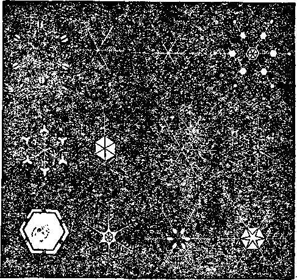
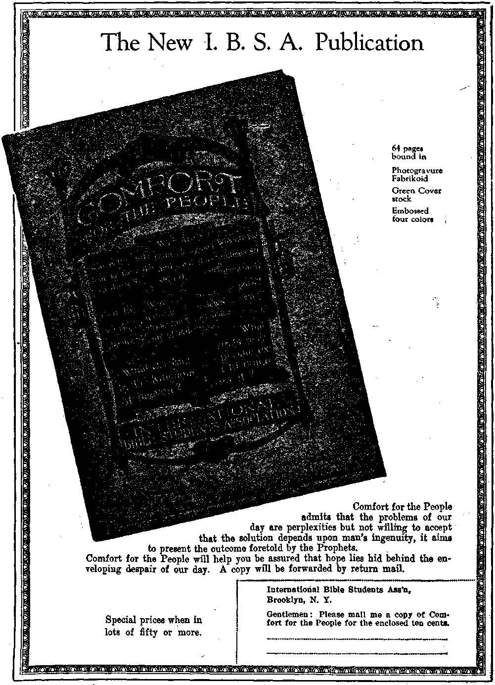

Labor and Economics Pits- or News ...
Five-Day Week In Detroit Laundries
Idle Time in Various Industries
Social and Educational Students Had the Wrong Idea
Sad Plight of a New Jersey Family . .
Manufactures and Mining Some Interesting Things About Gotj> ...
“Gold That Perisheth” ..........,.
■ Political—Domestic and Foreign
Fascist! Retreat from Staten Island . . . . .......
Who is Planning Mexico’s Next Revolution ? ; . . . . . . . 785
Agriculture and Husbandry The Pecan .
Science and Invention Wonders or the Snow
Home and Health The Right Foods . . . . ...... ... ... . , 781
Disease Is a Functional Disorder . . ... . . . . . .
Combinations Often ’Determine Food Value . , . , . . . .
Travel and Miscellany Aerial Maps of Oil Reserves
Mammoth Spiders of the South Seas
Subterranean Waters of the Sahara Desert
A Meditation at Napoleon’s Tomb.....: . .
Religion and Philosophy At the Shrine of Bonne Saints Anne
Published every other Wednesday at 18 Concord Street, Brooklyn, N. Y., U. S. A, by WOODWORTH, HUDGINGS & MARTIN
Five Cents a Copy—$1.00 a Year Maks Remittances to THE GOLDISH AGB
Foreign Omens : British . ... .34 Craven Terrace, Lancaster Gate, London W. 2
Canadian ......... 88-40 Irwin Avenue, Toronto, Ontario Australasian ...... . 495 Collins Street, Melbourne, Australia
South African......6 Lelie Street, Cape Town, South Africa
Entered as second-class matter at Brooklyn, N. X., under the Act of March 3, 1878
■■ . ■■■■' I . . ■»^H*«ggggMggggBgBa«gBa^^
Volume VI Brooklyn, N. Y., Wednesday, September 9, 1925 Number 15*
GOLD is widely distributed. There are two cents worth of it in every ton of sea water. It is found in silver and copper ores, in quartz veins, and in placer mines, which latter are nothing but gravel beds into which gold has washed from mother lodes higher up.
Gold is 13.3 times as heavy as water. It is harder to melt than brass. It has a tenacity of seven tons per square inch and elongates thirty percent before breaking. A gold wire one-tenth of an inch thick will support 200 pounds. A grain of gold can be made to cover seventy square inches of surface. It can be beaten so thin that a photograph can be taken through it, so thin that it takes three hundred thousand sheets of gold to make an inch in thickness, so thin that it vanishes if rubbed between the fingers.
Gold beating is done today by the same methods used in the days of King Solomon. The sheets of gold, rolled to one-four-thousandth of an inch in thickness, are beaten for seven hours, at the rate of 120 blows a minute, with a hammer weighing seventeen pounds.
Gold leaf for use on signs swallows up $1,-000,000 of gold every year: $4,000,000 more goes into dental cavities. Half of all the known gold in existence is in jewelry. The rest of it is in money or in gold bars which are the basis for money.
In Bible times a favorite form of money was jewelry of a certain weight, and therefore of fixed value. Thus Eliezer presented to Rebecca “a golden earring of half a shekel weight, and two bracelets for her hands of ten shekels weight of gold”. A relic of this is the English pound sterling, which at one time was of the value of one pound of silver, while a penny was a pennyworth of the same metal. The first shillings were pieces cut from gold armlets..
The world’s production of gold in the past 425 years is estimated at about $18,140,000,000, ol! which amount $9,740,000,000 have gone into cir-rencies. At present nearly half of this amount is held in the United States. England and France each have about three-quarters of a billion; Japan, Spain and Argentina each a half a billion; and Holland, Italy and Canada each a quarter of a billion. In the remaining sixty countries of the world the total gold holdings are about a billion.
It is estimated that three billion dollars in gold have disappeared in India, China and Egypt, where the natives still believe in carrying their wealth around with them in the shape of personal adornments. Gold bangles, anklets and armlets are common in all these countries, and gold nose rings in parts of some of them.
rpHE generation that is passing knew much of the great California gold rush, because the actors in that romance were with us only a few years ago. Now they have mostly passed. But there is no doubt that the rush of 1849 has the greatest place in literature and in fancy of any gold stampede that has ever taken place.
At Sonora, California, in the summer of 1851, a man accidentally stubbed his toe against a rock. The impact left the familiar streak of yellow. The man carried the stone home and received several thousand dollars for it. In the same town another man driving a mule cart found a solid gold nugget weighing 35 pounds in a place over which thousands had passed. The third largest nugget ever discovered was picked up at Carson Hill, California, in 1854. It was fifteen inches long, six inches wide and four inches thick, weighed 195 pounds troy and brought more than $43,000.
The mother lode of California is a vein of white gold-bearing quartz that stands abovo the surface like a wall and runs parallel to the main axis of the Sierras for eighty miles. There is gold enough in the lode to pay all the debts of the world, but it costs more to get it out than it is worth. Costs at present are so high that Seventy-five percent of American gold mines have had to discontinue operations. Many of the mines have caved in and cannot be reopened.
Curious things happen in the mining business. Four miners found a valuable nugget. They took it to San Francisco, and were so careful of it that one of them watched it day and night. It was such a magnificent specimen that it was taken east for exhibition purposes, but when they got it there the owners quarreled and lawyers got every cent of the proceeds.
An Omaha man bought a trunk at auction for $4.50. When it was opened it was found to be full of mud. His friends laughed at him for his purchase; but he had the mud assayed, with the result that his purchase netted him a little over $1,800. The mud contained gold to that amount.
It is not generally known that there is gold in small quantities in the East. Georgia and the Carolinas have sixty or seventy gold mines that have produced as high as $1,000,000 worth of gold in a year. There is gold in Maryland. Seven gold mine claims were filed in New York state in 1923. Some of these gold mines in New York state, however, are swindles, pure and simple, run only for the purpose of separating foreigners from their money.
In districts where water is scarce gold dust is now obtained by a method of fanning. Gold is heavy and remains when other forms of dust and gravel are carried on by a blast of air. The usual method of obtaining gold is to reduce the ore to dust, wash away the lighter particles with water, and pass the remainder over mercury, where the mercury seizes and retains the gold. The amalgam is then heated in a retort, the mercury passes off as a gas and is caught for use again, while the gold remains in the retort.
OF ALL the gold rushes that have ever taken place the Klondike rush in 1897 was the most spectacular. The fact that the Klondike region is on the very edge of the Arctic circle, and that the district was almost inaccessible and uninhabitable for civilized men, created a remarkable newspaper interest in the repeated reports of inexperienced prospectors who returned after two or three months’ work with $100,000 or $150,000 in their sacks. But for most of. the prospectors who rushed into the Klondike in 1897 there was nothing but disappointment. Only prompt intervention by the government in bringing away the jobless and the moneyless prevented great loss of life.
The Klondike put Canada on the map as a gold-producing country, so to speak. Next to the Transvaal, which comes first, and the United States, which comes second, Canada is at the top of the gold-producing countries. The Ontario gold belt is estimated to be 1,000 miles long, and there is said to be in remote and inaccessible parts of Quebec a gold quartz ribbon two hundred miles long and ten miles broad.
It was the gold of Colombia and Peru that led Pizarro and his comrades on the greatest campaign of treachery, cruelty and meanness ever seen on earth. About the palace of the Inca, at Cuzco, Peru, there was once a chain of gold so heavy that two hundred Indians were required to carry it. They were on their way from Cuzco to Catamarca in 1532 to deliver this chain to Pizarro, when they learned that Pizarro’s men had strangled the Inca; and they threw the chain into a lake, where it still lies.
It is known that there are millions of dollars worth of gold in Colombian and Peruvian lakes, thrown there by the Indians rather than have it fall into the hands of the European savages who represented his Catholic Majesty, the king of Spain. An English syndicate has recovered about $1,000,000 from one of these lakes, Lake Catamarca.
The largest gold nugget ever found came from Chile, weighed more than 400 pounds troy and was worth nearly $100,000. Brazil has a gold mine 6,600 feet deep which employs 3,000 men and turns out more than $2,000,000 worth of gold each year.
WELVE times the Scriptures mention the gold of Ophir. The statement is made that
the gold for Solomon’s temple came from there. It has been known for centuries that Ophir was some place reached from the head of the Red Sea and that it took three years to make the round trip.—1 Kings 10:22. . .
Scholars have contended for generations as to the location of Ophir, some holding that it refers to India, which does not produce gold in any considerable quantities; some that it refers to Arabia, which does not produce any of the items mentioned in the verse; and some that it refers to southern Africa, which produces all the things mentioned, “gold, silver, ivory, apes and parrots [not peacocks].” The place now seems to be identified with Rhodesia, and the port from which the shipments were made is now known to be the present Sofala (Sofara— Ofar—Ophir), on the Rhodesian coast.
The thing which has made the identification complete is that the old workings of Solomon’s mines have been found, the old road which led from the mines to the coast has been traced for many miles, and the old forts which guarded the treasures enroute are still in evidence and have been previously mentioned in these columns. >
Solomon’s mines are now being worked again. Their veins of gold-bearing quartz seem practically inexhaustible, and the fine quality of the ore furnishes ample justification for the Old Testament’s suggestions that gold from Ophir was superlative, something fine beyond comparison. Moreover, by the methods of navigation then in use it would take just three years, so it is claimed, to make the round trip from the Red Sea to Sofala and return. South Africa produces today more than one-half of all the gold in the world.
Australia produces about seven percent of the world’s present gold supply, and near Kalgoorlie is a sixty-mile ridge rich in the metal. The second largest nugget of gold ever found was obtained at Ballarat, Australia, in 1859. It weighed 224 pounds. There are immense undeveloped gold deposits in Siberia. There are said to be four thousand square miles in the Stanovoi and Zablonoi mountains every part of which shows gold.
Occasionally in their search for gold prospectors throw away metals that are even more valuable. The New York Times tells of some gold miners who threw away a bluish-gray chaikish substance which they thought valueless, but which turned out to be osmiridium, a member of the platinum group, and worth $200 an ounce for tipping fountain pens and making delicate bearings for fine machinery.
THE Scriptures give us to understand that at some time gold will lose its value. Men have found this hard to understand, but now it is becoming plain. In the past there is nothing men would not do for gold. Hardly a month passes but that we. hear of efforts to recover millions in gold known or supposed to have been buried in this or that location by pirates, men who for gold did not hesitate to murder their fellow men. A new device enables divers to cut through the sides of buried vessels with an oxy-acetylene flame and thus reach treasures hitherto inaccessible.
One odd piece of salvaging now under way is the attempt to recover five thousand Dutch cheeses which a German submarine sent to the bottom in 1915, but which are now known to contain $10,000,000 in bar gold and $11,000,000 in Chinese securities.
The war has made men exceedingly clever in finding ways to smuggle gold from one country into another. In a carload of walnuts smuggled from Rumania into Germany it was found that the contents had been removed and the shells had been carefully glued together after being refilled with Rumanian gold coin. A cargo of Rumanian apples was also found to contain a coin in each apple. A shipment of soap went wrong, and a gold coin was found in every bar. The monster War makes the world gold mad; it is that upon which he feeds.
On Oak Island, Nova Scotia, is a treasure of $10,000,000 placed there by pirates long ago. It has been located at a depth of 100 feet in quicksand. The drills have shown that the gold and silver bars or coins are twenty-two inches in depth; but although many attempts have been made, reaching over a period of 130 years, no way of recovering the treasure has ever been found. Several companies have gone bankrupt trying to solve the problem. The sea usually rushes in and drowns the plant just as success seems near.
The way in which gold is about to perish is pretty well understood by scientific men. Small quantities of gold have actually been made from quicksilver. At present the cost of operation is two thousand times greater than the gold is worth; but Thomas Edison, whose opinion on a matter of this kind is of first importance has said: “I have always felt that the gold clausa
in bonds is dang srous. This clause provides that the bonds shall be paid in gold of a certain ’degree of fineness. What would the people who own railway bonds say if they should wake up
some morning and find that gold could be manu-faetured as cheaply as pig iron? Well! That is exactly what will happen some day—and it may happen any day.”
[Radioeast, with other items, from Watchtower WBBR on a wave length of 272.6 meters by the Editor.!
NTS hundred and seventy-five laundries in Detroit have agreed upon a five-day week, at least during the hot weather. It seems to us that the steam laundry is an especially appropriate place for the five-day week, because the fumes and heat of laundry work make it almost obligatory that the workers have more than usual time for recuperation out of doors.
HE Federated Engineering Societies have published findings which show that the cloth
ing worker is idle thirty-one percent of his time: the shoemaker, thirty-five percent: the building craftsman, thirty-eight percent. The worst case of all is that of the bituminous coal miner, who averages to be out of work ninety-three working days in the year.
WO boys, members of the. Missouri School of Mines, needed additional tuition money.
They decided on a quick way to get it. They stole an automobile and drove it to Montana, where they held up the proprietor of a summer resort. They did not know that the Montana man could shoot so quickly or so well. Now they are in jail, awaiting trial for highway robbery, with a good chance of many years in prison to think it over. Education comes high.
IN THE town of Westville, New Jersey, the Gormley family consists of a destitute widow and four children. The widow was taken ill. She asked a ten-year-old boy to cook some food for a four-year-old child who is ah invalid. He found nothing but rice. When it was cooked the little fellow’s own appetite overcame him and he ate the rice. The mother reproved him, and within a few moments he made two attempts
to hang himself and one attempt at drowning. At last reports he was recuperating in a hospital. How much the world needs God’s kingdom!
URING the last forty years there have been lynched in the United States 3,165 blacks
and 1,038 whites. The average for the forty years was 106 per year; but during last year there were only sixteen lynchings in the whole country, twelve of them blacks and four whites. It is hoped to make 1926 a lynchless year, a civilized year, so to speak.
WHEN you buy goods you not only buy the labor and materials which enter into the goods but you also buy additional wages, rent, heat, light, power, telephone, supplies, cost of capital, bad debts, freight, cartage, losses due to markdowns, returns and pilfering, losses due to mistakes, costs of delivery, small purchases, long credits, changes of styles, taxes, broken packages, turnover, leakage, etc. You also buy profits, if there are any. ;
MERICA’S bill for fire waste last year was $1,044 a minute, an annual loss of $548,
000,000, exceeding all previous high records. These figures are furnished by the National Board of Fire Underwriters. The total amount of property destroyed during the year was equivalent to more than half the interest on the national debt. -
LITTLE Negro girl nine years of age flagged a train on the Baltimore and Ohio
Railroad near Hagerstown, Md., just as it was bearing down upon the limb of a tree that had fallen across the track. The engineer expressed
. the belief that the obstruction was so placed that if the little girl had not done this it would have thrown the cars fifty feet down the mountain side.
HODE ISLAND, which has the distinction of a network of automobile roads that have
cost several million dollars, has the added distinction of making the police regulation that automobilists using the same must make thirty-five miles per hour or get off the road. The official announcement has been made that the ~ roads are too expensive to be cluttered up with traffic moving at twelve to fifteen miles an hour. Sounds like a good advertisement.
OLORADO has in one district about ninety-two square miles of oil shales. These are
now of such prospective value that the government is having them surveyed; and as they are inaccessible by ordinary methods, lying in very mountainous districts at high elevations, the surveys will be made by airplanes, flying at a height of 13,000 feet.
OTHING but praise is heard for the Indiana bankers who were progressive enough and
clever enough to fortify their bank from robbery by equipping their bank vault with the deadly Lewisite gas. The rout of the burglars at Elnora, Indiana, was so successful that a general' arming of banks with poison gas is considered likely. No human vigilance is needed. The gas is in a delicate glass container that is shattered at the least disturbance of the vault.
ARELESSNESS in addressing mail results in two hundred million pieces of mail being
given directory service every year at a cost estimated at $1,740,000. In New York city alone the cost of this service is $500 every day in the year. Dead mail matter which cannot be delivered anywhere yields the government about $300,000 every year.
FTER the death of Mr. La Follette the New York World generously said:
Thia man who has more often been called an obstructionist than any other man of his own day was personally responsible for more legislation than any of hia contemporaries. Good or bad, there the legislation stands, legislation which La Follette was the chief factor in enacting: shipping laws, railway laws, tax laws, cooperative laws, labor laws, laws addressed to the interest of farms and banks and courts and mill hands. He was straight: no charge of dishonesty was ever leveled at him even in the thick of battle. He was vigilant; it was he who first attacked the lease of the oil reserves.
These words of the World now make one wonder at its attitude toward Mr. La Follette' a year ago. But he is dead now, and big business is always kind and courteous to the dead. It does not fear Mr. La Follette now.
OUNG men who have become American citizens have foundra way to get their fiances from Europe and Asia despite the immigration laws. The young ladies come here as students. While here they are married and go to Canada on their honeymoon; and when the young woman returns, with the passport properly viseed, there is said to be no legal way of keeping her out.
BOM somewhere in the wilds of Manhattan or Brooklyn on the Fourth of July three hundred and fifty honest-to-goodness Fascisti in their black shirts, and with two brass bands, piled off from two ferry boats, on the shores of Staten Island, announcing their determination to take charge of an Italian celebration to which they had not been invited. Just as they were about to begin proceedings they ran into a detachment, twenty-five in number, of New York’s finest under the control of Deputy Police Commissioner Cornelius Cahalane. The Fascisti are alleged to have made the serious mistake of attacking the police, but the battle only lasted a few minutes. After pounding a few heads the police let the 350 men parade around a little and then escorted them back to the boat, very tame and law-abiding Italian-American citizens, doubtful of the value of Fascisti ideas and practices in the land of the free and the home of the brave.
ONLY seven of the states have made application to the national government for their share of the large number of trophies of the World War which are available to every state for the mere asking. The common people have no interest in the matter. The World War was not of their seeking or their planning. They did not profit by it. They wish to forget it.
Difficulties Faced by Physicians
THE Rockefeller Foundation points out the increasing difficulties faced by the general practitioner of medicine. Specialists monopolize the prestige and receive the larger fees. -Laboratory and hospital facilities are often expensive or inaccessible. Sanitation is eliminating typhoid and malaria. Free clinics, school and industrial medical services, health insurance and hospital associations all tend to cut down his field of livelihood.
Vision Restored Due io X-Ray
BLIND for two years, Benjamin Delobowsky of New York now sees again. An examination of the brain cavity by means of the X-Ray located the difficulty. Surgeons performed an exceedingly delicate operation in the back of the . head (where the organ of sight is located) and Mr. Delobowsky’s sight returned.
ANXIOUS to express its hatred of the Bible, and with a fine disregard of truth and common honesty, a Chicago labor paper, The Industrial Pioneer, would discourage all who stand for the Bible by using the following language regarding such: “He represents medievalism, the age of inquisition, auto de fes, rack, rope, block, witch burning and perpetual imprisonment for religious nonconformity.” As a matter of fact the true Bible lover stands for none of these things, but for the exact opposite. The persecution and bigotry in connection with the Tennessee evolution trial is all leveled against the Bible and against those who love the Bible. Nothing could be more unfair than the way the papers treat them.
A MIDDLEWEIGHT champion prizefighter, Harry Greb, is represented in the New York Evening Graphic as saying to a Pittsburgh Roman Catholic priest whose church he attends: “Father, you’ll have to pray like hell and I’ll have to fight like hell to whip Mickey Walker.” Greb added: "He did and we won. I sent him a money order for $100 the morning after the fight. This same priest had his whole congregation kneel and pray for my success on the day that I defeated Tom Gibbons at Madison Square Garden.”
THE year 1925 is the year of the Papal Jubilee; since July 4th the United States government has been in its fourth fifty-year jubilee period; and on September 28th the Jews will have completed the seventy jubilee periods of fifty years each, dating from the time they^en- . tered Canaan, and extending until their due time to re-enter and permanently possess the land, which is now here.
IN NEW GUINEA and Australia are spiders with a leg spread of fully four inches that make nets so strong that small birds caught in them are held fast and helpless. The natives use them to catch fish that weigh up to a pound. Some of these nets ar'e stretched twelve to fifteen feet, with centers six feet high. Florida has an equally large spider that builds a golden yellow net of almost equal size.
THE New York Herald reports that a minister in Minnesota has two complete sets of vocal chords, deep bass and soprano; and that he has recently sold his throat for $10,000, to become the property of the British Medical Association after his death. What a joke this would be on the Medical Association if it should turn out that he would be one of the millions now living that will never die! The dominie will be in $10,000.
A SHOEMAKER of Strasburg, Germany, made entirely of straw a clock which has been running and keeping excellent time for seventeen years. With the exception of the hands, which are of oat straw, the entire clock is of rye straw, no other substance, not even glue, being used in the construction. The straw stalks were strengthened by inserting several smaller stalks in each of the larger ones.
The Pecan ByH.E. Coffee
THE pecan is a native North American nut tree. It belongs to the family of plants known to botanists as Juglandacece and embraces two genera, Juglands and Hicoria. The word Pecan is said to have been derived from the Indian word paean or powcohicoria. Mr. E. E. Risien of San Saba, Texas, has in his possession a fossil pecan which he found in lime rock thirty feet below the surface when digging a well. Geological specimens of pecans have also been found as far as seventy-five feet underground along the Missouri river. These excavated specimens seem to indicate that the pecan was cultivated by people who may have had a different mode of living or a better civilization than had the Indians at the time of the discovery of America.
E MAY arrive at some idea of the importance of the pecan through an examination of statistics, most of which were gathered by the Census Bureau. That these are not altogether accurate must be conceded, because the census enumerators were unable to get accurate information from many of the owners of pecan groves.
According to the latest census there are 2,662,444 pecan trees in the United States, and of these 1,045,694 are to be found in Texas. During the decade, 1909-1919, the entire United States produced 209,097,380 pounds of pecans. Of this total, Texas produced 112,938,940 pounds. The Southern states produce most of the pecans of the world. However Texas deserves special mention because she has fifty percent of the total number of pecan trees grown in the United States and produces fifty-two percent of the pecans. One county in Texas (San Saba) produces nearly one and one-half million pounds of pecans annually.
A great many of the best pecan trees ideally located have produced a ton of nuts in a single season. Government chemists have estimated this amount of pecans to be worth in food value for human consumption, three and one-half tons of best grade beef steak. It is doubtful if there is any other single living thing which can in a year equal this. In most seasons the grower receives from ten cents to fifteen cents per pound for seedling pecans and from twenty-five cents to seventy-five cents for improved varieties. This indicates that the improved varieties are the kind to grow.
IMPROVED pecans are those varieties which can be depended on to bear every year and yield large and well-filled nuts having a medium thin or very thin shell. For eating purposes these improved varieties are in most instances better flavored and yield a much larger percentage of nut-meat than the unimproved specimens. In those regions which already have pecan timber or hickory timber it has been found very profitable to propagate the improved varieties. Judge Guinn of Texas has said: “I have on my place hundreds of top-worked hickories and am securing good crops of fine pecans from them.” The bitter pecan or pig nut may also be top-worked. .
To top-work a tree for producting good pecans, the limbs are sawed off at about one-third the distance from the trunk. In other words the tree is topped. This work should be done while the tree is dormant in January or February. It pays to top-work only strong and vigorous trees. Trees less than twelve inches in diameter, and between ten and thirty-five feet in height, respond best to this work. After the trees have been topped they are later grafted or budded with the improved variety which it is desired to propagate. The growing part of the tree is that delicate tissue region between the bark and the wood called the cambium layer. In either grafting or budding success depends on the union of the cambium layer of the tree proper with the grafted-on layer from another tree.
There are several methods of grafting, but bark grafting has been most commonly used by pecan propagators. By this method the scion is inserted under a slit in the bark of the prepared stock. However, budding is the commonest and most approved method of propagation. There are several methods of budding in use—chip budding, patch budding, shield budding and H budding. Of these various methods patch budding is considered by many leading authorities to be best.
In patch budding the stock and scion must be of about the same size. A patch of bark about three-fourths of an inch long and about one-half inch wide is cut from the stock at the desired point. Another patch of bark of the same length and width containing a plump and well-matured bud is then cut from the bud stick and fitted in the place from which the patch from the stock was cut. The patch bud is tied in place with raff a, wrapping cord or strips of waxed cloth and in such a way as not to interfere with the growth of the bud. Suitable buds for this work are found as a rule only on wood of one and two year’s growth and only about five or seven will be found on a twig. However by cutting away the foliage and leaving an inch or more of the leaf stem, the number of suitable buds on a given limb may be materially increased. These buds are ready for use from ten to fifteen days after the foliage has been removed.
THE tabulation of expenses and proceeds on Judge T. H. Ridgeway’s pecan grove may prove of interest. Judge Ridgeway was reared on a farm in Missouri and for a number of years has been practising law in San Antonio, Texas. He purchased fifty acres of land thirteen miles from San Antonio which contained native pecan trees. He had all the native trees topped and top-worked with improved varieties of pecans. He has kept an itemized account of his expenses and income on this venture which is submitted to give an idea of what may be accomplished by budding and grafting:
EXPENSES
50 acres, purchase price $60 per acre.....—..$3000.00
Clearing and grubbing, leaving approxi
mately 600 bearing pecan trees................ 500.00
Cost of budding and grafting 150 native
trees, including care of trees, and owner’s
time ........................................................... 150.00
Removing moss and dead limbs from bearing trees.................................................... 25.00
Hog-proof fences................................... 150.00
Total cost to date........................$3825.00
PROCEEDS
1919 Sale of wood ...........—-—..................$ 200.00
1919 Sale of pecans................................... 1,800.00
1919 Sale of 300 bushels corn grown on 12
acres, at $1.15 per bushel.............. 345.00
1920 Complete failure of pecans and corn.
Used entire fifty acres for pasture for hogs and cattle........................................
1921 Sale of pecans.................................... 1500.00
1921 300 bushels of corn, 50c. per bushel.. 150.00
1922 400 bushels of corn, 50c. per bushel.. 200.00
1922 4000 pounds pecans (estimated) 20c. 800.00
Value of pasturage, at $100 per year for four years .................................................. 400.00
Total..................................................$5395.00
Total profits during the period ......$1510.00
A BOUT one-half of the pecan crop of Texas is destroyed annually by the nut casebearer. This insect appears as a moth in May and as many as three generations may be produced in a season. Its stages of life-history are: Egg, larva, pupa and moth. The damage from this insect may be greatly reduced by applying to pecan trees an arsenate of lead spray. Other insect enemies of the pecan are the obscure scale, pecan shuck worm, May beetle, pecan catacala, pecan twig girdler, fall web worm, pecan bud worm, flatheaded apple-tree borer, leaf galls, termites and black walnut curculio. A few other injurious insects might be added to the foregoing list.
The earth no doubt will in time be rid of all injurious insects. Perhaps one way-in which thia essential work may be accomplished will be by beneficial insects. A very beneficial insect which heads the list is the lace-wing fly or aphis lion. This insect is very fond of eggs of butterflies and moths, and will eat any insect it can overpower. It has been found very helpful in controlling many insects injurious to pecans. The nut case-bearer, which I have before mentioned, is often held in check by the ichneumon-fly. This is a parasitic insect of which there are various kinds and sizes. The correct name for this kind is hymenoptera wasp. The eggs of this wasp are deposited by the female in the back of the nut case-bearer. She does this by locating the larva in the nut or twig and drilling a hole in it. This egg produces a larva which lives by sucking the blood of the larva in which it was deposited as an egg. Finally instead of a nut case-bearer moth emerging the young ichneumon-fly emerges. Other beneficial insects are the tachina fly and the wheel bug. By proper encouragement of these beneficial insects in a short time the injurious ones could be entirely done away with, whereas now they serve merely to hold them in check. Now they seem to serve merely as the agencies of a divine providence ■which says: "Thus far shaft thou go and no further.” Is it unreasonable to expect that out future ruler, Christ, will accord to them the ability to multiply more abundantly and make the earth a better place for man’s habitation?
BOUT twenty years ago there occurred the death of James Stephen Hogg, one-time governor of Texas, a man who arose from humble circumstances and a citizen well known for constructive legislation. His death was given added publicity because of an unusual wish of his which -was complied with. He expressed the desire that no monument be erected to his 'memory but that a pecan tree be planted at the head of his grave and a walnut tree at the foot. He further requested that the nuts from these trees be passed out among the plain people of his state for planting, that they might help to make Texas a land of trees.
This unselfish spirit manifested by Governor Hogg has aroused the interest of a great many in planting pecan trees. The pecan tree is not quick to yield returns but the returns are sure and extend over a period of many years. , It takes from four to six years for pecan nuts to develop into trees suitable for budding or grafting. After this, one may have to wait ten years longer for a very large return in way of nuts. Regardless of this, many old men have taken the interest to plant pecan groves, knowing that the trees would yield returns to their children and grandchildren.
Principal Roy M. Canon, of Runge, Texas, reports planting fifty paper-shell pecan trees this year on some land owned by the Runge public school. The returns will be used as an endowment fund for the school. He says: “Of course, I do not expect to be here when that endowment begins to return a revenue; yet the school, and whoever happens to be here, will profit by it.”
Many cities are now encouraging the idea of planting useful trees which are useful in the greatest number of ways. They have in many instance selected the pecan; for it is a tree which makes excellent shade and can be depended on to yield a most useful food. Those who plant the pecan tree now are helping to give fulfilment to that prophecy which says: “They shall plant vineyards and eat the fruit of them.” Those who plant trees may usually be numbered among the “meek”. It is that prophecy from Holy Writ which now applies to the “millions now living [that] will never die”. It was in anticipation of this time that the prophet wrote: “All the trees of the field shall clap their hands.” The pecan tree will be among these. This scripture is not meant to be applied literally, but we may expect the pecan tree to flourish under Messiah’s reign. The poet has well expressed my thought and truthfully in words of prophecy:
“They shall walk ’ncath the trees by the river .
With the friends they have loved by their side.”
THE following excerpt from the Neue Zuricher Zeitung appeared in a recent issue of the German edition of The Golden Age :
Under the African sun, over a seemingly unending horizon, stretches out the hot sandy ground of the Sahara desert. Here and there a few palm trees invite a rest, and under their branches there is a struggling spring of brackish water. , Waste and unproductiveness are the marks of this great desert. What is it that this dead ground needs to make it productive? Water, just water, Without which no creature can exist.
"And yet this precious fluid, whose absence is so deeply: felt, under the hot African sun, is not far distant. , It is not necessary to bring it from far away at great cost; it is right there. But it cannot be seen; for it is covered with sand-dunes. In an epoch not very remote from the present, according to geology, there roamed at one time whole herds of elephants where now the camel yearns for dried grass. This stream of a dead past has been rediscovered, likewise its sister stream deep under the brown sand. In the west the Saur a and in the east the Igharghar run together in one channel whose course is well known. Tomorrow, perhaps may be re-discovered the underground sea “Bahar Tahtani” of which the natives never tire to speak.
To make the Sahara desert productive as of old it will be necessary for the life-giving water buried under great depths of sand to be brought to the surface. The idea to water the Sahara with its own water is not new. On May 1st, 1856, the engineer Jus undertook the first drillings with a temperature of about 103* F. This was near Tamema, a small oasis of Ued R’rir, which was threatened with extinction due to lack of water. The fever attacked not only their bodies but their brains as well. At last, on June 9th, 1856, the water flowed from the ground, having been reached after drilling about 200 feet. The spring delivers 950 gallons per minute. Tamerna was saved. The second attempt was made in the gardens of Temersina. There the spring only gave forth nine gallons per minute. In Sidi Rached the natives began to dig a well, but a layer»of sandstone stopped their primitive work. The French came to their rescue and continued the drilling. After four days the pure water came forth at the rate of 897 gallons per minute. This put new life into a region that was near extinction. In 1860 there were fifty wells in the Sahara desert. The work of boring now began to be carried on systematically; whole sections were being reclaimed to new life and activity. Not the large date palms merely but the people themselves who under their shade subsist on their fruits were made to thrive because of the waters of those reclaimed lands. In 1901, 22,050 lbs. of dates were exported; in 1910, 48,510 lbs.; in 1921, 116,865 lbs.; the best proof of the good results that followed the drilling of these wells. The population also greatly increased during this time.
The World War put a stop to all further activity here as elsewhere. From 1914 till 1919 all boring was at a standstill; and when it was resumed, scientific boring methods being improved in the meantime, it seems as if nature wished to make up for the four years of inactivity by lavishly pouring forth its water riches. Drilling now reached depths which before were impossible, some wells reaching a depth of 3900 feet. Since then there is water in abundance. In 1923 four wells were opened, delivering 2120 gallons per minute, the one at Tarfund Serira 3430, and the other at Saad ben Tobbi 3700 gallons per minute. But all of these figures were overtopped by a well near an oasis called M’raier, 72 miles from Biskra. This artesian well, opened in March, 1924, and sunk to about 650 feet, began to flow first at the rate of 1056 gallons per minute, then 5280, 9770, 10,000, and now as many as 11,100 gallons per minute water the parched ground. More than 80,000 palm trees have been awakened to new life. The oasis expands and others appear; a big change has come. To be sure, the Sahara desert is still far from being a cultivated plain, except where the date palm with its top greeting the sun and its roots planted in water does flourish; while under its shadow perhaps some cereal may grow; but the hope that the whole desert will become an oasis is well founded in view of the fact of present wonderful results. Already there are many cultivated places in the desert which have been permanently reclaimed from unproductiveness.
As for the cost of these borings: This is almost nothing compared to the benefits received. From 1904 till 1918 the boring of artesian wells cost 1,266,000 francs. Years before, caravans when weary from heat and thirst in the desert, saw in their feverish imaginings the cooling, refreshing water, sparkling under the shady branches. Then it was an illusion. Now scientific principles and their applications are bringing about the realization of those feverish dreams.
This interesting report from the Neue Zuricher Zeitung is a remarkable proof that we are now living in the time when divine prophecies are being fulfilled before our eyes. The world witnesses, and the events transpiring corroborate that which holy men of old foretold thousands of years ago: That the wilderness shall become a fruitful field (Isaiah 32: 15); that the wilderness and the solitary places shall be made glad, and that the desert shall blossom as a rose.—Isaiah 35:1.
This report confirms that in the wilderness waters shall break out and streams in the desert, that the parched ground shall become a pool, and that in the thirsty land there will arise springs of water. (Isaiah 35:6,7) Men have discovered the streams spoken of in Isaiah 41, verses 18,19, and now see with their own eyes the Hteral transformation of the desert into pools, thirsty lands into springs of water, and the planting of the cedar, shittah, myrtle, olive, fig, pine and box trees together; yet with cold hearts and silent lips they look on this spectacle. The great astounding feature of all this fulfilment of prophecy they fail to appreciate. An amazing self-conceit, termed wisdom, has so completely blinded mankind that not even such tangible proofs and “signs of the times” which God gave, as stated by the prophet in Isaiah 41: 20, have any effect on their minds.
With further reference to this matter we quote the following from Thurgauer Zeitung:
The water gushes from the auger-hole in a high stream. With this stream fish and small crabs in perfectly fresh condition are carried to the surface, together with mollusks and other aquatic creatures. As emphasized by the French periodical La Nature, these creatures belong to the same species as are native to the lakes of Palestine. Science thus finds itself confronted by a whole chain of problems, difficult of solution. Whence come these creatures and how do they subsist at such depth? The fact that they exist, leads to the conclusion that these subterranean waters must extend over a vast area, and that artesian wells presumably could supply enough water to transform part of the desert into fertile land. It might be added that these fish, living in eternal darkness, are minus their eyesight.
The Right Foods By c. e. stewart [Broadcast from WBBB by the writer.]
ADVANCEMENT is being made along all scientific lines; but making progress in the proper use of foods to best sustain and conserve the energy of the human machine is fraught with difficulty. In the first place dieticians do not agree. Each of them has his hobby, and in trying to do something to attract attention each of them at times develops a bad case of “hot air”. One dietician urges the use of milk; another says milk is fit only for calves. One says to eat no meat, no concentrated food; his opponent advises meat eating. One says to use only raw or uncooked foods; his opponent says to cook food until well done.
That there should be a change from the old bad habits is evident; and in time the evils of bad combinations and poor preparation of food will entirely be done away. Science is doing much in teaching us the component parts of all foodstuffs, and what each part has to do with the rebuilding of the human organism.
HE human body, like everything else, is built of electrons. The atoms oxygen, hydrogen, nitrogen, carbon, sulphur, sodium, chlorine, iron, calcium, iodine, phosphorus, potassium, etc., are found in the Jiuman body. Each has an electronic content of its own; and the combinations of these atoms, forming molecules, go to make up flesh, bone and blood. If these atoms are normal, and their electrons are functioning properly and orderly, health is enjoyed. But any atomic derangement causes a dis-ease of body, and the symptom of the disease will manifest itself in the weakest part of the body.
An overload of certain foods causes extra secretions of mucus, and this will show up in some form of catarrh or constipation. If the catarrh is in the nasal passages, and a remedy is taken to stop the discharge of the nose, then the catarrhal condition is scattered to other parts of the body, which increases the poisonous content of the entire human organism. Really to cure catarrh one must stop eating the offending foods and build up the system with foods which contain the elements which the body lacks.
If we are to have healthy flesh, skin, bones, nails, hair, blood, sinew, veins, nerves, eyes and teeth it stands to reason that we must eat foods which will supply the materials to rebuild the wasted tissues. The electronic content of the atoms of the human machine needs a variety of compounds peculiar to the functioning units of the organism, such as those found in glands, gastric juices, tissue, fibre, nerves, etc.; and these peculiar combinations are manufactured within the body as nature demands, when supplied with the materials out of which they can be made. For instance, the body needs sugar. But all the sugar necessary will be refined within the body from the fruits and vegetables that are ingested. We need not, therefore, consume an ounce of granulated sugar at any time.
ISEASE is any functional disorder, the cause of which is improper nourishment, clogging of the physical system, lack of proper bodily care, overtaxation of energy by labor, worry, grief, or loss of rest and sleep. Disease is caused by poisoning the system through harmful foods and drinks, by vaccination, or by any other means of filling the body with poisons in such quantities that the elimination system is inadequate to the immediate exigencies of the case. The symptom is not the disease; an ache or pain is not the disease. These are but the signals of nature which call attention to the disease. Sneezing, gaping, yawning, coughing, belching, hiccoughs, etc., are but distress signals which the human body is throwing out as a warning that something is out of balance. These are signals which call for attention as much as do hunger and thirst.
Catarrh, boils, carbuncles, running sores, foulsmelling feet and bodily odors are evidences that a person is filled with filth, and that the system is using any or all of these methods to make a house-cleaning. The remedy is not pills, salves, etc., but in corrected habits of diet. In nine times out of ten the body is overcharged with starchy foods. “Catching” cold is not possible for a person in normal health, but is a sure indication that the person has an excess of wastes or poisons stored up in the tissues and blood of his body.
IF THE bowels are not open, giving at least two movements a day, reduce the food intake of all kinds, except as follows: Uncooked apples, peaches, apricots, plums, pineapples, grapes, muskmelons, tomatoes, figs, prunes (uncooked and stewed), and cooked spinach and other greens, fresh cider, and liberal quantities of water.
When the bowels are too loose, eat sparingly of all the above-mentioned laxative foods and drink any of the the following: Blackberry juice, raspberry juice, strawberry juice, cocoa, chocolate, ginger ale, and sassafras tea. Well-masticated cream cheese is also recommended. Tea, coffee and coca-cola are also binding, but these are not recommended. The coca-cola habit is a form of drug addiction.
Constipation is a clogging of the human body; it is a great evil, and a source of much bodily distress and of most diseases. Constipation and its hurtful results is not sufficiently stressed upon the minds of the young to induce them to regard it as a serious matter. Constipation should not be taken as a “matter of course”, but as an indication of ignorance or stupidity in respect to eating, or as the result of indulging the craving of a false appetite. Constipation is a filling, or at least a covering of the intestinal linings with effete matter which retards the movement of the wastes of the digestive system, much the same as soot clogs a stovepipe; and atrophy of the bowel muscles results, reducing the elasticity and resiliency of the intestines and destroying the natural operation of the alimentary canal.
Medicines which cause bowel convulsions are harmful, weakening the system, and laying it open to further ravages of disease. Proper foods intelligently used are the only remedy, supplemented with fasting when advisable. The constipated person not only has his body of flesh filling up with poisons, but his blood becomes thick and his nerves become impaired through malnutrition of the glands, and his brain becomes diseased through improper nourishment until the mind loses some of its alertness, and the whole body becomes a cesspool of corruption. Castor oil or salts may remove the filth from the intestines for a day or so, but what of the poisons which saturate the fibres and sinews of the body, and have even gotten into the very marrow of the bone I
Turn at once to proper foods and patiently persist in the straight and narrow, but pleasant (after you get used to it) path to Wellville. The length of time it will take is determined by the long standing of the case and the power of the will. Caution should be exercised to make no abrupt change of a revolutionary kind, but change by degrees and as fast as possible without too far depleting the system of its energy. Start the change by cutting out all white bread, white crackers, macaroni, spaghetti, potatoes, pastries and prepared breakfast foods (except bran); and ingest instead cooked and uncooked prunes, figs, and members of the Green family— spinach, kale, chard, dandelion, beet tops, etc. Take liberal quantities of these. The prunes and figs need not be thoroughly masticated; but the Green family need to be ground into fine pulp, chewed until the swallowing impulse comes naturally. Grass-eating animals usually chew their cud, you know. And as you increase the intake of these foods reduce the consumption of all others. You are probably eating three “square” meals a day. Reduce the number by, cutting out the breakfast meal.
WHILE the American people are more or less gluttonous they are starving for want of foods containing certain elements which are necessary to health. The nearer we get to foods in their natural state the better will be the results. We have been catering to false appetites and creating perverse tastes for so long that we have had to season our foods to make them taste “right”. All refined foods are noxious and inimical to health. There are sixteen mineral salts in wheat, but all of these are removed in the milling process, and the buyer of white flour is robbed of all the food value. White flour is an excellent article with which to make paste—for hanging paper on the walls, etc. It is also extensively used by the womenfolks. in making pastries—pies, cakes, doughnuts, etc. Polished rice is another article which should never be eaten; and to call it “food” is a discredit to the human intellect.
The world would be much better off without so much wheat and rice and oats. The reason why these things are pushed upon suffering humanity and so extensively advertised is that these commodities are controlled by gigantic trusts which are interested not in the health of a nation but in getting its money. Refined foods are mucus-forming foods and therefore fill the system with poisons and catarrhal affections of the nasal passage, stomach and other organs, and help to make the drug store and doctor business good. Small quantities of-whole wheat and unpolished brown rice are not objectional foods.
Too much importance is given to bread, possibly because bread is mentioned in the Bible; but bread in the Bible is sometimes synonymous with food, and has no reference to the stuff we call bread. The world would surely be better off without any white bread; for it is not the staff of life, but the cudgel of death.
The skins of potatoes also contain the essential mineral salts; but when potatoes are peeled the hogs get the food and the members of the household get the mucus-forming portion which causes constipation and ultimately disease. If eaten at all, potatoes should be baked and the skins eaten, discarding the interior as useless, especially if there are other starches to be consumed at the same meal. Meats are another cause of disease. They contain much protein and uric acid. We do not need the protein that was once thought necessary, therefore the meat eater overloads his body with concentrated food which is injurious to health and diminishes the 'desire for the other foods which are rich in essential salts so necessary to health. To supply the needs of the body meat is not needed at all, though if used sparingly and well cooked it is permissible; for when in health the body can eliminate the excess of its requirements. But in a diseased body meat only adds to the derangement. Beef eaters lay the foundation for tuberculosis, and pork eaters are inviting the dread disease of cancer. An occasional meal containing lamb or prime bullock, well done, is not very objectionable. Meats should not be eaten in hot weather.
THE occupation and habits have much to do with the requirements of each individual.
In whatever way the vitality is expended or the system sapped the replenishing process should be along the lines of the wastes. If the, work is muscular, one should eat vegetables of all kinds, sea-food products, fruits of all kinds, and greens, in the order named as to quantity, and of course properly combined. If the work is mental, one should eat fruits of all kinds, greens, vegetables, and sea-food products, in the order named as to quantity and importance, properly combined. The amount of ingestion should be governed by the energy expended.
Most people want to be fat (excuse the error), stout or at least “pleasingly plump”. When the texture of the skin is fine and ruddy, the muscles firm and the physique in good health from work and exercise, then it is allowable to have a little plumpness; for the elimination system is taking care of the wastes and poisons which the human engine continually discharges through the bowels, kidneys and liver, and exudes through the pores of the skin. But if the flesh is flabby, rough or coarse, then the system is full of filth, whether the symptoms of disease are manifest or not. The approach of gout, rheumatism, neuritis, failing eyes, decaying teeth, or catarrhal discharges is only a question of time, if indeed the individual is not already fearful of the actual presence of one or more of these disorders. The wiry, muscular, trim physique of the athlete is the model best for men and women. Underweight is better than overweight for health and longevity.
ARIOUS foods in themselves are not injurious, but become harmful when taken
in improper combinations with other foods. General rules may be laid down which should be religiously followed by all. And additionally,. there are specific rules which each person must learn for himself; and in this, experience is the best teacher. We know a person who cannot eat anything to which tomatoes have been added; another gets sick at even the smell of onions; another will vomit and need a week for recovery if milk in any form is taken into the ' stomach; another is unable to digest boiled cabbage; and still another has a digestive apparatus which rebels at canned corn.
Right foods ofttimes become wrong foods because of peculiar derangements in the chemical laboratory of the body. Right foods become wrong foods in improper combinations. Therefore teo large variety at one meal should be avoided, and practice should be given to eating one thing at a time. If we eat salad made up of either fruit or vegetables we should permit the desire for food through the aid of the eye to make the choice as to what is to be first eaten; eat all of this that is wanted; then proceed to the second item, making selection as before; and so on.
Cook with butter; vegetable oils are permissible ; but avoid lard. The cooking of foods is an essential part of health, after the proper foods have been selected. Heavy cast aluminum cooking utensils are the best. The ordinary sheet or pressed-out aluminum is not the best. Never use granite ware to cook in; granite slivers off in small particles and gets into the food; granite is indigestible. Cast aluminum costs money, but it is economy in the end—and health. With the use of cast aluminum very little water is necessary, and the less water used in cooking the better. Be sure to utilize the water from cooked food some way; if in no other way, drink it, for the mineral salts which are so important to health are often cooked out into the water. There is health in every drop we have been throwing away.
THERE is no food that is right food for the morning meal. At breakfast is no time to break a fast. Keep up the daily fast until the noon hour. The stomach needs the rest; it is tough we know, and a very willing slave; but sometimes it functions with great difficulty. When the stomach is at rest and the assimilation of food has been taken care of, then something remarkable takes place in the human body. The wastes and poisons which are in the fibers of the flesh are more readily dislodged and thrown into the circulatory system and carried to the alimentary canal for elimination under those ideal conditions of stomach-rest and assimilation-rest. When the stomach is secreting gastric juices for the digestion of food, and the body is assimilating the food digested, there is very little elimination of the wastes and poisons from the deep-seated cells of the body. Why not cooperate with nature and keep well!
If a person is digging coal or post holes or is working in the harvest field, then it may be permissible to eat the morning meal; but such meal should consist of fresh fruit, or prunes, or figs, not thoroughly masticated; or of fresh tomatoes, lettuce, rhubarb, greens of some land, or raw cabbage, well masticated; or a smaller quantity of each of the above classes of foods.
Upon arising in the morning drink at least a pint of medium hot water to which has been added either the juice of a lemon, an orange, or a grapefruit. If you wish to sweeten it, add a small quantity of honey, New Orleans molasses or maple sugar. If, after the morning drink of lemon juice, you must eat breakfast it is best to eat vegetables instead of fruit for harmony of combination. Eor the noon meal fruits may be eaten freely. If you do not eat breakfast, then your morning drink of acid fruit juices will be out of the way so that the less care need be exercised in choosing the foods at noon.
^piIE following are the right foods:
Use liberal quantities of prunes, uncooked or cooked -without sugar; apples; oranges; grapes; lettuce; spinach; uncooked cabbage; tomatoes; berries in season; fresh garden vegetables ; and orchard fruits.
Use medium quantities of dates; figs; raisins; string beans; unpeeled carrots and turnips, cooked and uncooked; cottage cheese; cream cheese (at noon meal only); onions; melons; peas; milk and milk products; dandelions and other greens.
Use slight quantities of lamb; young beef; salmon; fresh fish; fowl; baked potatoes; sweet potatoes; bran muffins; corn bread; whole wheat or graham bread; oatmeal (in winter only); navy and lima beans; nuts of all kinds; eggs (one only at a meal); celery; salt; icecream the year around; molasses bread and cake; bananas; and olives. Cakes made of whole wheat flour may be eaten at a non-starch meal.
And, lest you forget, avoid the following: Beef; pork; all fried foods; everything made of white flour; white polished rice; store and factory-made candies (make your own, with brown sugar); macaroni; spaghetti; tapioca; pancakes; waffles; doughnuts; spices; vinegar; pickled foods; catsups; corn syrup; all refined sugars; white granulated sugar, made of either cane or beets (except for preserving purposes); and all refined breakfast foods; also tea and coffee.
Drink plenty of water two hours after each meal; drink none just before eating; and a small quantity if any at meal time. Good buttermilk is a health drink at meal times and in between. Do not take a bath until two hours after a meal, nor closer than one hour before eating. Drink a full glass of water both before and after the bath.
OT only should we consider the chemical content of food, but also its value to the human body as an aid to health; such as for instance, the ease with which it is digested, and assimilated into the system, and also the wastes eliminated with the least energy to the vital organs.
The overeating of any one thing is harmful. The promiscuous mixing of too many varieties at a time is also harmful. A variety of six or eight items of food, well balanced and harmonized, eaten one thing at a time, is ideal. Always and in every case eat the fruits first, then the green-leaf vegetables, then the more solid foods.
Be light drinkers at meal time. If milk is used, do not use the following food at that meal: Rhubarb, tomatoes, pineapples, lemon in any form, peaches, apricots, oranges, cherries, cranberries, currants, huckleberries and apples. If milk is used with peaches, huckleberries and apples mix them so that the chemical change may take place before eating.
Smoked herring and salmon are two good fish foods, and they may be eaten with advantage two or three times each week. Do not eat tuna as a substitute for salmon; for tuna has not the food value of salmon. When eating fish foods or meat do not eat any nuts at that meal nor drink milk. When milk constitutes part of the meal use for the heavier foods the allowable cereals and such fruits as have a small content of acidity, such as figs, dates, prunes, bananas and pears. Adults should eat nothing between meals.
For pliability and suppleness of tissues, for avoiding the hardening of the arteries and the approach of old age, we should make our daily diet consist more of figs, prunes, dates, raisins, lima and navy beans, tomatoes, spinach, dandelions, lettuce, chard, celery, oranges, apples, plums, peaches, pineapples, bananas, carrots, beets, parsnips, turnips and rutabagas. If you are in the habit of eating meat, substitute a small quantity of nuts. Try unroasted peanuts.
These foods just mentioned supply potassium .to the system for the bodily nebds, and where these are ingested in sufficient quantities there will be no cancerous growths. When there is a lack of these foods consumed it is manifested in moles, warts, and other fungous growths.
The way to restore health to the sick is by getting acquainted with the laws of health, the way the organs of the body function, and the foods required to maintain efficiency; how to prepare properly the foods, and the quantity to eat to supply the demands of one’s own organism. That all do not require the same quantity is obvious. Not only does the amount of work determine the amount of intake of food, but the build and habits of the person has much to do with it. A person with larger alimentiveness will outeat another expending the same energy, and may not be so robust as the other. Alimentiveness belongs to the head rather than to the stomach ; one having this organ large loves to eat, and will usually eat whether or not. One such has difficulty saying “No” to himself when there are pork chops around, or a piping hot dish of macaroni with cheese, or rhubarb pie with soggy crust made of high-patent, mineral-denuded, life-extracted snow-white flour.
THE Cuban paper La Discusion, Havana, Cuba, on July 5th published the following information:
C. Aguilab Accuses The Americans
Says that American Interests have asked him to make a revolution against President Galles.
Mexico City, July 4th. General Candido Aguilar, former Secretary of State, who served under the Carranza Administration in Mexico and who is now living in Cuba, has sent a signed report to this citystating that “American interests” have approached him to ask him to take part in a revolution that is being planned to hinder the law-abiding government of President Plutarco C. Calles, on condition that the revolutionist must protect the Americans and their properties.
In view of the fact that this statement has been branded as false, General Aguilar has promised to send
tiie necessary proofs in detail if this case is put under Aguilar arrived in Cuba last year and is at present the consideration of the State Department. living at Cojimar, near Guanabaeoa.
IN A certain small town in western Indiana, not far from the Illinois state line, there is a breeding kennel of high-grade Great Dane dogs of varied colors for both exhibition and commercial purposes. Some of the dogs are jet black, some black and white spotted, others dark and light blue-gray, dark yellow and tan, but more generally yellow and drab brindled.
These dogs resemble somewhat the greyhound but are less rangy; they are more stocky, and are much more powerful. They are shipped to all parts of the world for hunting big game, such as bear, cougar, wildcat, lynx, wolf, coyote, badger, coon and smaller animals. They are also purchased and used as family house dogs, for protection of children and property. They are easily trained to be gentle or savage, can be readily taught not to leap over a fence three feet high, or to clear a five-foot wall or fence at a bound. They are fed once a day on meat scrap, potatoes and gravy-soaked bread, except ffie female in breeding season twice a day, which season occurs twice a year. The puppies are fed three times a day, mostly on milk and soft foods, such as gruel.
One of the females of this collection, a large black and white animal, is said to have been Sired by the magnificent <fbody guard” of Kaiser Wilhelm ex-emperor of Germany. Another is a gigantic buff brindled male said to be the most highly bred Great Dane west of New York, and could not be bought for $1,000. An offer of $500 has several times been refused. This dog has won every first prize in all contests of his exhibition, which are many. The dogs of this kennel range in value generally from $200 to $350 for breeding purposes and for game hunting. The puppies can be bought at from $50 up, according to quality and color. The breeder of these dogs cannot produce them fast enough to supply the demand.
During daytime the animals are confined in an out-of-door range, more or less separately, of about twenty to fifty feet space. At night they are shut up in the dog houses, averaging from about eight to twelve feet floor space. Naturally they bark at noises and strangers, but hush instantly on command of the keeper. All know their names and respond to the command of the keeper, though he be out of sight. These dogs are highly intelligent.
The females are given to fighting each other out of jealousy, and in several instances have fought to the death, a heavy financial loss to the breeder. He- must stay right on the job. Even the puppies vigorously fight each other, and the mother complaisantly looks on, meanwhile interposing no objection, though a puppy howls with pain.
Several whippings are administered to keep the dogs in subjection. One whipping for a certain offense is always sufficient. The offense will not be repeated. Hence one must exercise great care lest the dog be spoiled by wrongful chastisement. The dog never forgets what he thinks he was whipped for; and only with much patience can a mistake be corrected.
The ears of Great Danes are lopped like those of the hound, but are more abbreviated. They are not naturally spike-pointed upwards as one might suppose. They are docked to make them sharp-pointed upwards. The state law of Indiana forbids the docking of domestic animal ears. Therefore they are taken across the Illinois state line, where the job is done. This illustrates how law is often defeated.
One might wonder why these high-bred dogs are not frequently stolen. The dog can be stolen readily enough without any danger of detection. But who will pay a fancy price for an animal whose pedigree is unknown? The difficulty lies in the disposition of the stolen dog at a good price. It would be like stealing an elephant. Besides, who wants to enter, a dog kennel at night?
Wonders of the Snow By Frederick Lardent, D. B. 0. A. (London)
THE ancient historian Herodotus tells us, in his gossiping way, that the Scythians re'' ported of the country lying beyond them and farther to the north, “that it could not be ■ passed, nor yet discerned with the eye, on account of the feathers which were continually falling. With these, both the earth and the air were so filled as effectually to obstruct the view.'’ Doubtless Herodotus had sufficient acquaintance with the natural phenomena to conjecture that by “feathers” the wild inhabitants of Scythia in reality meant snow. Snow is always a wonder to all who see it for the first time, and, familiar as it is to most of us, one occasionally • meets with people to whom it is utterly strange. . Youths born in India, for example, on visiting England in winter gaze upon a snowfall with astonishment and admiration.
Even in this country the schoolboy, glancing out at the window, is usually filled with enthusiasm as he sees the snowflakes white and feathery, come tumbling from the heavens — eddying, sporting, rising and sinking ere they drop upon their final resting place.
THE severe winters experienced in some lands are not without their compensations, as is evidenced by an incident recorded by a traveler:
When in the Hebrides, I looked out on a November morning and saw a white world in a pink glow. Between the fir trees, the bay glistened like a polished mirror and there was not a cloud in the sky. At ten o’clock I hastened for a ramble over the hills. Hard frost had immediately followed a fall of snow. Nature was in her new dress; like bridal robes it etherealized her, giving her a strange unfamiliar beauty too exquisite for ordinary wear. Where yesterday was mud an angel had come today to change the scene to unparalleled I glory. The very path leading to the moors seemed as though strewn with diamonds.
Snow—jIts Utility
WHATEVER town dwellers may think of snow, the farmers, gardeners and agriculturists are glad to see it. They will tell you that the precious grain, herbs and grass are now : snugly protected from the sharp destroying । frosts. Thus it is that the rain which falls in summer to cool and nourish plant life, now falls like : soft wool to protect from a too chilling atmos- । phere. In Vermont, for four successive days
in one winter the temperature was thirteen de* grees below zero. Beneath a four-inch depth ofl snow the temperature was found to be nineteen degrees above zero, thereby showing over thirty degrees of difference. This strikingly reveals that snow is to the earth what bed coverings and clothes are to the human body. In springtime the warm rays of the sun melt the snow and in place of the mantle of white there arises the robe of living green. The tender blades shoot forth vigorously as though gratefully to acknowledge their former protection.
IT IS interesting to know something of the formation of snow, and to this end we need to touch upon the law of crystallization which phenomenon is common throughout nature.
Crystallization occurs when some particular substance is dissolved in water and allowed free course in regard to the shape which it adopts as the water evaporates. A familiar instance is that known as rock or sugar candy, which is obtained by dissolving sugar in water and then allowing the water to evaporate slowly. The uninitiated would think that the resultant sugar had come from some form of mould because of its symmetrical appearance; instead, the molecular forces of nature were the sole artist. Alum crystals, such as are sometimes seen in druggists’ shop windows, are formed by a somewhat similar process. Given their own special opportunity nearly every substance will crystallize—gold, silver, platinum, lead and such like minerals and compositions; the outcome being geometrical forms which vary immensely.
The rare beauty of precious stones is due in the first place to the law of crystallization. For instance, the hardest known substance is the diamond. This is pure carbon in the highest pitch of crystallization, and what led to it was that particular and congenial environment suited to the substance. One diamond, such as the famous “Hope” diamond, is worth a fairly large fortune; and yet how “hopeless” such a diamond would be if submitted to the steady focus of a large sun-burning glass, which could easily reduce it to oblivion!
Many of the dark caverns of the earth when illuminated reveal an amazing array of crystals of marvelous beauty, shape and color. For thousands of years the mineralized water has slowly percolated through various strata. Many of the crystals are seen to be of huge dimensions, revealing that they have attracted the ever ready elements to their requirement and grown, icicle like, larger and larger. Standing in one of the large limestone caves and viewing the crystal formations on all sides one might with but little power of imagination fancy he stood in the aisle of some grand primitive cathedral flanked by immense rocky pillars.
Visiting a museum one is struck by the infinite variety of crystalline forms. They vary from the simple cube, which shape the crystals of common salt, to geometrical formations of more than twenty faces, every substance invariably maintaining its own particular design; and be it remembered that these have not been carved by htiman ingenuity but by that mysterious electromagnetic-potentiality which seems to be inherent in the specific atoms of the substance.
WATER, as we have seen often acts as an agent in the crystallization of other substances ; yet it, too, by a change of temperature, will yield to the same law. “Jack Frost’s” decorations on our window panes present us with an apt illustration of this. The little drops of water are now changed to fairy traceries of a winter night. The large blocks of ice which we sometimes see are built up of interlaced crystals. This is evidenced by a simple experiment: A beam of electric light when cast through the ice, causes it to melt in the interior, the result being beautiful six-sided ice-flowers within the block. Appropriately enough the word crystal is derived from the Greek Icrustallos, meaning ice or frozen water; and like many other words this, too, eventually took on a larger meaning.
TO THE average person a snowflake is very much like what a primrose was to the person in Wordsworth’s poem:
“A primrose by the river’s brim A yellow primrose was to him; And it was nothing more 1”
When an authority on snowflakes first took up the study he thought what so many think, that all snowflakes are alike. After many years of observation he admits that he has never found two alike and he has photographed over four thousand of them. Think of it! Every snowflake different in its webwork of delicate tracery I Herewith we illustrate some of these flakes as
they appeared under a microscope after they had fallen upon a sheet of glass.
Each little snow-crystal or flake takes on a different shape owing to the variable combinations of atmospheric conditions—temperature, density, wind-movement and the electrical content of the air through which the rain-drops pass. Thus a fresh realm of beauty is revealed. A lace maker has produced some of these designs in his work.- Jewelers, designers in cotton, silk, paper, and wood are ever turning over the leaves of the great Book of Nature to secure their choicest designs!
EVERY color emanating from any object is due in the first place to the intrinsic properties of the light by which that object is illuminated. Sunlight comprises every color, as is evidenced when it passes through a transparent glass prism which reveals the primary colors in their separate order.
Some objects will entirely absorb the ethereal wave-lengths responsible for some particular color and reflect the others. A green leaf, for example, absorbs that which is responsible for red and reflects the green, while a scarlet poppy will absorb the green and reflect the red. Snow, on the other hand, harmoniously reflects the
purity of sunlight. Snow is made up of very tiny icy prisms which actually cause the sunlight to be refracted into its primary colors; yet, owing to their minuteness, the rays re-assemble and are sent away again in the form of dazzling whiteness.
OW this reminds us of the action of divine truth, which comes to the consecrated
Christian who reasons upon it, seeks to understand it, and then reflects it in its harmonious purity for the benefit of others!
Snow thereby stands as an apt symbol of purity, righteousness, goodness and love, a perfect expression of unselfishness. “Come now, and let us reason together, saith the Lord: though your sins be as scarlet, they shall be as white as snow.” (Isaiah 1:18) The response is manifested by the words of David, “Wash me and I shall be whiter than snow.” (Psalm 51:7) No wonder the spotless purity of God’s angels is shown by the same apt symbol! (Daniel 7: 9, Matthew 28:3) In vivid contrast to snow, black objects, which absorb or destroy every radiant hue in sunlight, stand for a symbol of despair, selfishness, wickedness and death.— Isaiah 50:3; Jude 13.
BOUT four thousand years ago the Lord asked the Prophet Job an interesting ques
tion : “Hast thou entered into the treasures of the snow? or hast thou seen the treasures of the hail, which I have reserved against the day of battle and war?” (Job 38:22, 23) That particular period is now here (See Isaiah 13: 2-11; 34: 1-8; Zephaniah 3:8), but where are the treasures of snow and hail? In our interpretation we are to remember that snow and hail are but rain in varied form; and rain (water) stands for truth. —Deuteronomy 32:1,2. •
The hard truths which pelt upon the wicked1 to their discomfiture may well be represented by hail. (Isaiah 28:17) Snow, on the other hand, represents those truths which bless in every way and which are seen, examined and appreciated by the God-fearing who sincerely seek righteousness. And may we not reasonably infer that the many wonderful and beautiful designs which are contained in snow and which, though one-time hidden, are now revealed by the microscope, represent the glorious truths of the Bible which may now be seen, examined and appreciated in their infinite design ?
Unknown to others, Bible Students are now finding that the Scriptures constitute a veritable storehouse of spiritual treasures, a priceless mine of intellectual information. Its God-given illustrations are now found on examination to be of exquisite beauty and harmony, though they vary immensely just as snow-crystals vary one from another. But one must examine them carefully and prayerfully. Take for instance the life of Joseph the patriarch. This is merely an interesting story to the average reader, but to the thinking Christian there is a hidden design the meaning of which becomes so clear that the Messianic treatment meted out to the whole world of mankind is unfolded.
Blessed Bible, precious Word!
Boon most sacred from the Lord; Glory to His name be given, For this choicest gift from heaven.
’Tis a ray of purest light, • Beaming through the depths of night; Brighter than ten thousand gems Of the costliest diadems.
’Tis a fountain, pouring forth Streams of life to gladden earth Whence eternal blessings flow, Antidote for human woe.
'Tis a mine, aye, deeper too, Than can mortal ever go; Search we may for many years, Still some new, rich gem appears.
There’s a purple tint on the woodland leaves, And the winds are up all day;
There’s a rustling heard in the yellow sheaves, And it sadly seems to say:
“Sweet summer has gone away.”
In the wrinkled brook no roses peep, And the. bees no longer stray;
And the butterflies have gone to sleep; And the locust trills all day.
On the browning fields the spider spins, Where the lambs no longer play;
And the cricket now his chirp begins;
And the quail is whistling gay, “Sweet summer has gone away!”
At the Shrine of Bonne Sainte Anne
■“And is this Yarrow?—This the stream
. Of which my fancy cherish’d So faithfully, a waking dream, . An image that has perish’d? ? .
Oh, that some minstrel’s harp were near To utter notes of gladness,
And chase this silence from the air, That fills my heart with sadness!”
IF ONE could substitute “Sainte Anne de Beaupre” for Yarrow, and the thought of a shrine for the waters of that stream, and still preserve the poetic rhythm of Wordsworth’s well-known poem, it would well express my state of mind when I visited that famous spot recently.
Possibly much of the dignity of the shrine, reverenced for many years by devout Catholics, has been lost since the older Basilica was destroyed by fire. The temporary structure erected to house the relics of Bonne Sainte Anne has anything but a spiritual effect upon one.
Let me not be misunderstood. My visit to the shrine, while not for the purpose of healing, was not in a spirit of mockery; nor was it idle curiosity. There is that in me which causes . me to reverence and respect those works of art or nature, or the structures that men have erected and invested with awe, which are supposed to do good to their fellow man. Of the shrine of Sainte Anne I had hoped much. I went prepared to be impressed tremendously. Perhaps I even expected something of the effect that must have been produced when the angel troubled the waters of the Pool of Siloam; perhaps I hoped to see the manifestation of a power of faith too seldom met with in everyday life. No matter now what I expected, I did not get it. What I got was two and a half hours of exceedingly poorly stage-managed vaudeville and an example of modern simplicity and credulity which even in the dark ages would have been a disgrace. But then, primitive and priest-ridden Quebec is still in the dark ages.
It was a warm beautiful day when we left Quebec, my friend and I, who also wished to view what has always been represented to be such a marvelous sight,'the faithful pilgrims at the Shrine of Sainte Anne de Beaupre. St. Anne’s is not so very far from Quebec City; and on the way one gets a magnificent view of Montmorency Falls which, although not large, are high, and present a beautiful picture.
By D. H. Copeland
PON arrival at the village the passengers disgorged and streamed toward the hillside ; for Sainte Anne lies between the mighty St. Lawrence river and the bluffs which compose the river bank. The air was vibrant with the chatter of air riveters and the clang of steel girders; for a great new shrine rises phoenixlike, above the ashes of the old. We followed the crowd, looking with interest at the motley variety, noting the booths and stalls in whichlioly pictures and soft drinks were mingled in artless confusion. The great building of the Diorama drew our temporary interest until we smelled the usual admission charge—a feature of Sainte Anne’s with which we were to become very familiar.
Outside the shrine itself is a large square in which stands a heroic statue of the noble lady herself with the infant Mary in her arms. As I looked at the classic features of the “grandmother of God” I remembered the statuary of ancient Greece which litters several rooms in the Chicage Museum of Fine Arts. Evidently the sculptor who created Sainte Anne knew Greek statuary intimately.
There is a tablet marking the spot where the first miracle was performed ; and what a miracle that first one must have been! The story of the shrine is interesting. Two sailors buffeted and storm-tossed in the St. Lawrence river, being nigh unto death, vowed a chapel to Sainte Anne if she would vouchsafe to them their lives until they got ashore. Evidently the imminence of meeting her in heaven was too much to be borne. They managed to make their way ashore by means which could be construed only as supernatural; and in course of time the chapel was built. Just how the first healing power was discovered I do not recollect. Suffice to say that it was discovered; and that since that day the Redemptorist Fathers, who own the shrine, have made a remarkably good thing out of it.
I must admit that I was receiving a somewhat unfavorable impression of this famous place of healing. Mendicants with tin cups, obviously blind (and incurable?), dust, peanuts, soft drinks, side-shows, booths, and stalls, are not the best introduction to a religious atmosphere. Perhaps there is a holy peace and calm inside the sacred edifice not discernible outside. ■ - We enter the portals; and the cooler interior is grateful to a spirit which is shaken from its accustomed calm. We look around at the devout who kneel in the pews, and to the newcomers making genuflections according to the usual manner, on the principle that “when in Rome do as Rome does”. We move down the aisle to a coign of vantage, squarely beneath the pulpit, as events turn out.
We cautiously glance around with a guilty, infidel feeling; for are not these people devout, eyes closed, lips moving in silent prayer, beads clicking? Well, hesitatingly we form the conclusion, They seem much like us. Beads click, true; but the clickers appear much interested in the other clickers. Here and there a head bows devoutly, only to rise and turn slowly from side to side in appraisal of the crowd.
Across the back of the church, in monotonous perambulation, with the air of a caged creature of wilds, stalks (no shuffles) a tall priest. At each passing of the center aisle he bows the knee and bends the head. Ceaselessly the people move toward the front of the church; and here and there one notices a devotee making the Stations of the Cross.
WE LOOK forward toward the altar, a beautiful sight. Within the altar rail is a huge anchor and a cross all filled with the tiny red and white cups containing candles burning in honor of the saint, at ten cents a candle. They make a brave spectacle; and perhaps a blind and deaf god counts the mcarefully, and is good-natured at the amount of attention he gets vicariously!
Before the altar, and in the center of the main aisle, stands the great statute of Sainte Anne, an imposing figure. She stands upon a pillar of yellow marble fully eight feet high, I should judge, the base of which has at each of its four corners an umbrella stand filled with crutches and sticks. In the center of the base is something like a heavy watch glass, dimmed and roughened by the germ-laden lips of generations who have kissed it. Beneath it is the famous relic of Sainte Anne, a section of her fingerbone, blackened with age.
We examine these things with interest; for has not the Pope blessed this holy relic, and has it not effected marvelous cures? And the while we watch the faithful kneel at the base of the marble pillar and kiss the relic; and we listen to the merry tinkle of the dimes and quarters dropping into the coffers of the Redemptorist Order; for one does not kiss unless one pays!
Suddenly a blast of language assails our ears, coming out of the air iirimediately above our devoted heads. It is thus we learn that the box near which we sit is a pulpit. A French priest in high-pitched, sing-song voice rapidly patters a prayer and an appeal. The relics and objects of piety which the congregation have brought with them are about to be blessed. 0 thrilling moment!
In the pew in front of me a well-dressed, intelligent-looking man with his wife kneel in silent adoration. The priestly voice rises and falls. Occasionally the congregation murmurs a briefl answer. The voice rises until it strikes a vibrant pitch. A rustle; and in every hand there appears some object to be blessed, a crucifix in one, a rosary, a medal, a picture—all are held up that the waving hand of the priest might describe the magic cross above or toward them. All I held, and now the more tightly than ever, was the money I chanced to have in my pocket. “Amen,” snaps the priest; and with a relieved air the congregation straightens up, and we with them. What next?
Almost immediately another priest enters the box, and a call for help echoes across the audience. The saint is to go for an airing. Who will volunteer to carry her? After some little confusion, four husky young farmers are burdened with a smaller statue which stands under a canopy. They take their place in the procession, which has been formed in the main aisle. Here a group of women are clustered around a huge banner which some of their number bear, on which the monogram “S. A.” is intertwined. One might be forgiven for thinking that the Salvation Army is about to march instead of Sainte Anne.
Next in line are the saint and her bearers, then several priests, then more of the common people, and in the rear three gorgeous personages in surtouts stiff with scarlet and blue and gold. A choir of men assemble in the gallery before the organ; the organist strikes a chord; the choir breaks into a dirge-like chant to which in antiphon the procession replies; and slowly, with great solemnity, the procession moves off. The procession makes the round of the building. The hymn of praise in honor of the holy saint continues; it fades, grows stronger; and the head of the procession again enters the church and proceeds slowly up the aisle.
But what are all those signs nailed to the fair face of the organ? What? Can it be? It is! “Defense de cracker,” strikes our staring eyes from half a dozen huge placards. “Defense de cracker”—“It is forbidden to spit!” and again, just as we were beginning to appreciate the holy solemnity of the occasion, the whole effect is ludicrously spoiled.
HE statue reached, all disband and try to obtain good seats near the front. The saint is hurriedly parked, the banner furled, and the choir indulges in a quiet smoke after its exertions. (I am reminded of the parade of the great god Bel, and of Sargon the fish god, through the streets of ancient Babylon. The hymns of adoration in honor of them sound strangely like the hymn I heard at Bonne Sainte Anne that day.)
Again a priest ascends the pulpit and naively expounds the gospel according to the Redemp-torist Fathers. He tells us in excellent French the story of Sainte Anne, and calls repeatedly upon the venerable saint to “pray for us”. With simple cunning he suggests that of course one can pray direct to the Virgin Mary for aid and intercession; but that Anne is the mother of the Virgin; and consequently that the Virgin, being an obedient daughter, would no doubt obey any commands given her by her mother. Bonne Sainte Anne, the grandmother of God!
Some cases of healing are told to us; and th^n we are exhorted to have faith in our prayers, and if we do not receive benefit on the occasion of this visit, then to come again (bringing, of course, more shekels). Parenthetically we are advised that the intercessory prayers of Bonne Sainte Anne are efficacious for Americans as well as for good French Canadians. The collection is now taken.
THIRD priest, perhaps the first one over again, ascends the pulpit, rattles off a prayer or two at express speed, and advises us that Mass is now going to be sung, and that the train will be waiting to bear us back to Quebec as soon as it is over. Like a well-oiled machine the mass priests are busy. A white banner is hung before “Le Bon Dien” in place of the green one which had been in position all through the former service; and much mummery is performed before the high altar. The priest intones the service, the choir answers, the people bow and mutter, then with startling suddenness there is a rush to the communion rail. The front rank kneels; and a priest passes rapidly down the line with the “body” of God, the while another priest drinks God’s “blood” before the altar. The front rank rises and rapidly oozes out of the building while another takes its place. We do not catch the significance of this move for a moment. Then my friend whispers: “The train”; and we also rapidly depart. As we leave, I glance upward at the noble choir; and my glance encounters again those fearsome signs “Defense de cracker”. Involuntarily I shudder; for no doubt the organist had been compelled to have them placed there in self-defense.
I notice on the rear walls of the church a motley collection of crutches and sticks, trusses, eyeglasses and iron braces of all kinds. No doubt the faith of some has had its reward or else a second-hand store has aided in setting the stage; but the train awaits. We hurry aboard and get fairly good seats, but soon the cars are crowded with a hilarious crowd filled with the holiday spirit. No religious holy calm here, but good sound animal spirits freed by the “Mass” from all cares.
We disembark at Quebec to receive bad news. Two other companions of ours, feeling that a more worthy object could be served than visiting the Shrine, had also gone to the village of Bonne Sainte Anne there to offer the inhabitants religious works and tracts. But the Re-demptorist Fathers permit no poaching on their preserves; and our brethren, in spite of their worthy cause, are arrested by the village constable, paraded before the cure, soundly cursed as heretics, and then hustled away to languish in gaol in Quebec City.
We retire for the night with the duty before us of bailing out the prisoners in the morning. There is little doubt in our minds that, were it possible, the secular arm would have them in closer confinement than a city gaol and that an auto de fe would be their lot. Thank God that even in darkest Quebec it is now possible to get at least a public trial!
[Radiocast from Watchtower WBBR on a wave length of 272.8 meters, by Judge Rutherford.
THE name David signifies beloved. David was used to make a type of Jesus Christ. God had promised that through the house of David should the great Deliverer come. When Jesus Christ had won the great victory over death and the grave and had finished His revelation to John, He said: “I Jesus have sent mine angel to testify unto you these things in the churches. I am the root apd the offspring of David and the bright and morning star.”—Rev. 22:16.
The work of David in preparing the material for the temple at Jerusalem which was afterwards builded by Solomon, was typical of the work of Christ and His church in preparing the material for the divine temple of God. When David had made this preparation and stood before the people of Israel relating what he had done in the providing of the material for the house of the Lord he lifted up his voice and praised the Lord in the presence of the people. Then he said in 1 Chronicles 29:11: “Thine, 0 Lord, is the greatness, and the power, and the glory, and the victory, and the majesty: for all that is in. the heaven and in the earth is thine; thine is the kingdom, O Lord, and thou art exalted as head above all.” Thus he pictured the Christ body, the new creation, proclaiming the praises of the great Jehovah God, the Majestic One.
The new creation, when completed and in full glory and power, will be transcendantly more wonderfully grand and beautiful than all of God’s other creations. We must know that the Creator is greater than the creature. Hence we do well to often give heed to the power, glory and majesty of the great Creator.
The primary attributes of Jehovah, which constitute him the perfect character and which attributes always bespeak His greatness and majesty, are wisdom, justice, love and power. His august dignity, His imposing grandeur, His surpassing beauty and glory find no comparison in any of His creatures save His beloved Son alone in glory. And that Beloved One, when He had finished His work on earth and was about to enter the valley of death, declared: “And this is life eternal, that they might know thee the only true God, and Jesus Christ, -whom thou hast sent.” —John 17: 3.
The greatest desire of every human being
I
who possesses even partial sanity is that he might live forever in a state of happiness. To realize this paramount desire the creature must know something concerning the sublime and majestic One. To understand something of the divine attributes affords us some knowledge of the Almighty God.
HE wisdom of God is exhibited to His intelligent creatures in His creation and in His plan of redemption and deliverance. His plan, known by Him from the beginning, is now after many long centuries unfolding to man. The Genesis account deals with the creation over which God purposes to make man king. So wise is He that He know the end from the beginning, as it is written in Acts 15:18: “Known unto God are all his works, from the beginning of the world.”
When the time arrived for God to begin His creation of tilings it was necessary for Him but to command, and into existence came what He commanded. The spirit of God, the holy spirit, is the invisible power of Jehovah, exercised according to his holy will. In Genesis 1: 2, 3 we read: “And the spirit of God moved upon the face of the waters; and God said, Let there be light, and there was light.” Thus was His holy spirit or invisible power exercised.
After God had made the earth as the home for His intelligent creature, man, and after He had provided the perfect Eden therein, He created man. His wisdom is so perfect that He knew from the beginning and centuries before man’s creation just how and when He would create Adam. Now how did He create him? Did He evolve man from protoplasm into a tadpole, which by evolution wriggled off its tail, and then by its own efforts developed into a monkey and from a monkey into a man, as the self-constituted wise men of the present time say? I answer, No. Let the Word of God speak for itself and put to silence all the impious and ireverent men of earth.
In Genesis 2: 7 we read: “And the Lord God formed man of the dust of the ground, and breathed into his nostrils the breath of life; and man became a living soul.” In man we find the most wonderfully intricate machine ever made. The 206 bones of the human body each performs its exact function at the proper time and place. The skeleton is covered with flesh and beautiful skin, the like of which is found in no other creature; and the body contains the most marvelous electrical apparatus that was ever brought together. The prophet of God, when he considered himself and how he was made, as recorded in Psalm 139:14, said: “I will praise thee; for I am fearfully and wonderfully made; marvelous are thy works: and that my soul knoweth right well.”
Jehovah made the heavens to declare His glory and the firmament to show forth His handiwork, so that during the day inanimate objects utter more eloquent speech than the greatest orators of time, and each night shows the diversified wisdom of G od. When David stood upon the crest of the hills of Judea and in his mind communed with the all-wise Creator, he was moved to eloquent speech. On the east he saw the lofty mountains lifting their hoary heads heavenward and, like silent sentinels, standing watch to guard the entrance to the promised land. He observed the high and rugged hills, made as refuges for the wild animals, tie saw the domestic flocks and herds peacefully feeding in the sheltered spots and in the green valleys. He looked to the north and beheld the evergreen cedars of Lebanon, full of sap and life, emblems of everlasting life, waving their mighty arms harmoniously in the wind that blew softly upon their boughs. He saw the water streams spring out from the hillsides and hurry on to refresh the broad plains on the west, which spread themselves out to be kissed by the waves of the great and beautiful blue sea.
Moved with awe and adoration for the great Jehovah God, who in wisdom had made these things David exclaimed: “0 Lord, how manifold are thy works; in wisdom hast thou made them all: the earth is full of thy riches. So is this great and wide sea, wherein are things creeping innumerable, both small and great beasts.” (Psalm 104:24,25) Then he reverently lifted his heart to the great Creator and said, in Psalm 104:1-4: “0 Lord my God, thou art very great; thou art clothed with honour and majesty. Who coverest thyself with light as with a garment; who stretchest out the heavens like a curtain; who layeth the beams of hia chambers in the waters; who maketh the clouds his chariots; who walketh upon the wings of the wind; who maketh his angels spirits; his ministers a flaming fire.”
The wisest man of all time, moved to great admiration and awe in the presence of Jehovah’s creation, exclaiming (Proverbs 3:19,22), “The Lord by wisdom hath founded the earth; by understanding hath he established the heavens. By his knowledge the depths are broken up, and the clouds drop down the dew.” Again the Prophet David says, “0 give thanks unto the Lord; for he is good; ... To him that by wisdom made the heavens, ... to him that stretched out the earth above the waters: . . . to him that made groat lights: . . . the sun to rule by day: . . . the moon and stars to rule by night.”—Psalm 136:1-9.
The law' of God given to Israel foreshadowed the unfolding of His plan. This plan was made before the giving of that law and more than six thousand years ago. Perfect man fell and lost his perfect home and right to life. So great is the wusdom of God that He planned from the beginning for the redemption and deliverance and the restoration to the obedient ones of mankind, all that was lost.
There are many men in the earth today who think that they are wise. They look wise and try to impress others with their wisdom, but concerning them the Lord, through His inspired witness, said: ‘The wisdom of this vrorld is foolishness in the sight of God.’ These self-constituted wise ones by wisdom know not God. (1 Corinthians 1: 20, 21) Again God said to and concerning them, in Isaiah 55: 8,9: “For my thoughts are not your thoughts, neither are your ways my ways, saith the Lord. For as the heavens are higher than the earth, so are my ways higher than your ways, and my thoughts than your thoughts.”
THE dignity and majesty of God demands that His law must be fully and completely respected by His creatures. He could not be consistent and fail to exercise the quality of justice. Justice means strict conformity to the rules of righteousness. God’s will is His law, therefore His rule of action. His law is righteous. It follows then that a wilful infraction of God’s law by one of His creatures must be met with swift and certain justice. Hence when the perfect man wilfully violated the law of God judg-
rhe GOLDEN AGE
September o', 1925
meht, in harmony with justice, was given and enforced against him. God’s justice found expression in sentencing man to die because of his disobedience to the law.
Lucifer, to whom God had granted the power of death, had he remained in harmony with God would doubtless have been entrusted with the execution of the wrong-doers. But Lucifer himself deflected and induced the wrongful course of man. Hence Lucifer is described as a murderer; and in the course of time Lucifer, whose name is now Satan, the Devil, will be forever and completely destroyed. Concerning the justice of Jehovah it is written in Psalm 89: 14: “Justice and judgment are the habitation of thy throne.”
POWER means ability to act in the carrying out of the will of the actor. The power of God is one of His primary attributes working in harmony with His other attributes. His power was exercised in carrying into execution His great plan formed by His wisdom. There are men on earth who possess much gold and who are looked upon by many as great, and yet who have not sufficient power to create a blade of grass, nor color a leaf that rustles in the wind. They are capable of giving to some, and do give, a few million dollars to make themselves a great name; and others stand in awe of their power. Such power, however, is nothing in the sight of God. ’
. Comparing man’s insignificance with God the prophet says, in Isaiah 40:12: “Who hath measured the waters in the hollow of his hand, and meted out heaven with a span, and comprehended the dust of the earth in a measure, and weighed the mountains in scales, and the hills in a balance?” Many weaker ones hasten to take the counsel of the wiser ones, but their counsel, compared with the great Eternal Counsellor, is nothing. It is written by Isaiah (40: 13,14): “Who hath directed the spirit of the Lord, or being his counsellor hath taught him? With whom took he counsel, and who instructed him, and taught him in the path of judgment, and taught him knowledge, and shewed to him the Way of understanding?”
■ Selfish men with some power build nations and empires and boast of their greatness and their power to rule. Comparing with the power
of God the prophet writes: “Behold, the nations are as a drop of the bucket, and are counted as the small dust of the balance; behold, he tak-eth up the isles as a very little thing.....
All nations before him are as nothing; and they are counted to him less than nothing, and vanity. To whom then will ye liken God? or what likeness will ye compare unto him? ... It is he that sitteth upon the circle of the earth, and the inhabitants thereof are as grasshoppers ; that stretcheth out the heavens as a curtain, and spreadeth them out as a tent to dwell in.” —Isaiah 40:15,17,18, 22.
The power of God was manifest in the great deluge. He opened the windows of the heavens and caused the floods of waters to cover the whole earth, destroying all animal life upon the earth, save righteous Noah and his family, whom God carried over in the ark. Thus perished the first world. Again He tells us that His power will be exercised against the rulers and wicked institutions of this present evil world, by which it shall fall in a time of trouble such as the world has never known.
WE SEE that it was by the wisdom of God that all things were created and that His plan was arranged in all its minutiaa. We see that it was justice that caused Him to put the lawless to death, and that it is the exercise of His power, in harmony with justice and wisdom, by which He destroys the wicked and their wicked works. But these three divine attributes working together and with nothing more would leave God incomplete. If man is ever to enjoy the blessings of life, liberty and happiness something else must be done. Something else has been and more will be done by the Majestic One.
■ It is written in the Scriptures, “God is love.” By this is meant that God is the perfect expression of love. What is love ? I answer, Love is the perfect expression of unselfishness. Love springs from the heart. It is the motive that induces action to do good unto others whether the object of that love deserves it or not. Love is exercised without regard to whether there is reciprocity or not. Where there is selfishness there can be no perfect expresion of love.
God had graciously created man and granted him the right to life, and to use the blessings of earth incident to the perfect life. When man sinned he forfeited all rights and claims to these blessings; and had the plan of God stopped with power exercised in the enforcement of equal and exact justice, man would have forever perished from the earth. But the love of God now came to the fore to make all necessary provision for man. Mark now the proof that His love is the perfect expression of unselfishness.
If man was to live he must be redeemed from the judgment of death. The justice of Jehovah precluded Him from forgiving man and setting aside the judgment. It was impossible for Him to reverse His own judgment. The demands of justice must be met and the only means whereby man could be relieved from the judgment was by satisfaction being provided by another. The one providing this satisfaction must be equal to the perfect man Adam.
In all the earth there was none who could meet the divine requirements. In heaven there were many angels anxious to do Jehovah’s will. God could have taken one of these and transferred his life to the earth and made of him a man, perfect in his organism and perfect in every way, and used him to redeem mankind from death. That would have been a great sacrifice for God to give up one of his faithful angelic creatures. That, however, would not have been a supreme sacrifice. If you were called upon to do something for your fellow man and it was left to you to choose what you would give, would you give the dearest treasure that you possess? Or would you feel that you should give something else, and keep that which is dearest to your heart?
It is written that the Logos, who was afterwards also called Jesus, was the very beginning of God’s creation. In beautiful phrase the record concerning Him is written: “The Lord possessed me in the beginning of his way, before his works of old. I was set up from everlasting, from the beginning, or ever the earth was. When there were no depths, I was brought forth; when there were no fountains abounding with water. Before the mountains were settled, before the hills was I brought forth: while as yet he had not made the earth, nor the fields, nor the highest part of the dust of the world. When he prepared the heavens, I was there: when he set a compass upon the face of the depth: when he established the clouds above; when he strengthened the fountains of the deep; when he gave to the sea his decree, that the waters should not pass his commandment; when he appointed the foundations of the earth: then I was by him, as one brought up with him, and I was daily his delight, rejoicing always before him.”—Prov. 8:22-30.
In the Scriptures Jesus is also spoken of as the Beloved One of God, always loyal and devoted to the Father. Of course the Father loved Him. He loved Him above all others. To sacrifice this, His beloved Son, meant to sacrifice the dearest treasure of His heart. To do this in behalf of His lawless creature, mankind, meant the complete expression of unselfishness. And of course Jehovah knew that if His beloved Son should deviate the slightest jot or tittle in carrying out His plan that His own attribute, justice, would require that His Son should be forever wiped out of existence.
We see Jesus then changed from a heavenly to an earthly creature, made a little lower than the angels in order that He might carry out God’s love for man. Concerning this it is written in John 3:16,17: “For God so loved the world, that he gave his only begotten Son, that whosoever believeth in him should not perish, but have everlasting life. For God sent not his Son to condemn the world; but that the world through him might be saved.” Herein is love expressed in the superlative degree. Love is the greatest thing in the universe; God is love. In every act of God looking to the redemption and deliverance of man, that act is prompted by unselfishness.
It is written that Jesus Christ in glory is the express image of His Father. As a reward for His complete obedience to His Father’s will God has thus highly exalted Him, and caused Him sit down upon His throne with Jehovah. In everything He has worked together in harmony with His Father to carry out the Father’s will. And now, being the express image of the Father, He is given a name above all others and a position of glory above all others, the Father alone excepted. It is therefore properly said that Jesus also is the Majestic One, second to Jehovah God. It was God the Father who sacrificed His beloved Son. It was the beloved Son, in obedience to the Father’s will, that lovingly met the requirements and performed the supreme sacrifice of Himself. It was the attribute love that prompted the doing of it all.
UT why is this message given to man ? I answer: In order that mankind may see the marvelous provisions that the love of God has made, to the end that man might have life and enjoy all the blessings incident thereto. As man begins to gather some knowledge of God’s goodness he should find some gratitude in his own heart. If some person gives to you a desirable thing, how do you feel towards that person? You feel grateful, of course. If some person of high estate or rank, at a sacrifice to himself, presents you with a gift of great value, how do you regard him? With delight; you are proud of it. You hasten to tell others about it.
God then permits man to come to a knowledge of His own love and of His marvelous provision made for man in order that man might appreciate the goodness of God and might try to be obedient to the Lord’s law, that by doing so he might have life. Seeing then what God has done for us, how grateful should we be to the Eternal and Majestic One!
. The new day is dawning and the people are beginning to know something of God and of His love exhibited toward man. His beloved Son, the King of glory, true to His promise, has come again; and His beams of light are driving before Him the darkness that covers the earth. Ere long the light of His love will shine into every heart that desires to do good. His loving kindness knows no bounds. Such is the great Jehovah God, the Majestic One. Since the beloved Son, Christ Jesus in glory, is now the express image of the Father, Jehovah commands that all creatures in heaven and earth shall worship also the Son as they worship the Father.
The words of David were prophetic. They picture those who love the Lord and who have experienced His love, expressing in gratitude their praise and adoration toward Him; and what David said, they are now saying, as recorded in 1 Chronicles 29:11-13: “Thine, 0 Lord, is the greatness, and the power," and the glory, and the victory, and the majesty; for all that is in the heaven and in the earth is thine; thine is the kingdom, 0 Lord, and thou art exalted as head above all. Both riches and honour come of thee, and thou reignest over all; and in thine hand is power and might, and in thine hand it is to make great, and to give strength unto all. Now therefore, our God, we thank thee, and praise thy glorious name.”
How good, how marvelous is the loving kindness of the great Majestic One! Truly and beautifully the poet has said:
Majestic sweetness sits enthroned Upon the Savior’s brow;
His head with radiant glories crowned His lips with grace o’erilow.
He saw men plunged in deep distress, And flew to their relief;
For us He bore the shameful cross, And carried all our grief;
God’s promises, exceeding great, He makes to us secure;
Yea, on this rock our faith may rest, Immovable and sure.
A Meditation at Napoleon’s Tomb By Robert G. Ingersoll (Deceased)
A LITTLE while ago I stood by the tomb of the great Napoleon—a magnificent tomb of gilt and gold, and gazed upon the sarcophagus of rare and nameless marble, where rest at last the ashes of that restless man.
I leaned over the balustrade and thought about the career of the greatest soldier of the modern world. I saw him walking upon the banks of the Seine contemplating suicide. I saw him putting down the mob at Toulon. I saw him . putting down the mob in the streets of Paris. I saw him at the head of the army in Italy. I saw him crossing the bridge at Lodi with the tri-color in his hand. I saw him in Egypt in the shadows of the Pyramids. I saw him conquer the Alps and mingle the Eagles of France with the eagles of the crags. I saw him at Marengo, at Ulm and Austerlitz. I saw him in Russia where the infantry of the snow and the cavalry of the wild places scattered his legions like winter’s withered leaves.’ I saw him at Leipsic in defeat and disaster, driven by a million bayonets back upon Paris, clutched like a wild beast —banished to Elba. I saw him escape and retake an empire by the force of his genius. I gaw him upon the frightful field of Waterloo where Chance and Fate combined to wreck the fortunes of their former king. And I saw him at St. Helena, with his hands crossed behind him, gazing out upon the sad and solemn sea.
I thought of all the orphans and all the widows he had made, of all the tears that had been shed for his glory, and of the only woman who had loved him pushed from his heart by the cold hand of ambition, and I said that I would rather have been a French peasant and worn wooden shoes. I would rather have lived in a hut with the vine growing over the door, and the grapes growing purple in the kiss of the autumn sun. I would rather have been that poor peasant with my loving wife by my side, knitting as the day died out of the sky, with my children upon my knees and their arms about me. I would rather have been that man and gone down to the tongueless silence of dreamless dust than have been that imperial impersonation of force and murder that covered Europe with blood and tears.
The Golden Age takes pleasure in advising its readers of radio programs which carry something of the kingdom message—a message that is comforting and bringing cheer to thousands. The programs include sacred music, vocal and instrumental, which is away above the average, and is proving a real treat to those who are hungering for the spiritual. Our readers may invite their neighbors to hear these programs and thus enjoy them together. It is suggested that the . local papers be asked to print notices of these programs.
WATCHTOWER STATION W B B R Staten Island, New York City
272.6 meters 500 watts
New York Daylight-Saving Time
Sunday Morning, September 13
10:00 Watchtower Orchestra.
10:15 Fred Twaroschk, tenor.
10: 30 Bible Lecture—Judge Rutherford.
11: 00 Fred Twaroschk, tenor.
11:10 Watchtower Orchestra,
Sunday Evening, September 13 9: 00 I. B. S. A. Choral Singers.
9:10 Watchtower String Quartette.
9: 20 I. B. S. A. Choral Singers.
9: 30 Bible Lecture—Judge Rutherford.
10:00 I. B. S. A. Choral Singers.
10:10 Watchtower String Quartette.
10:20 I. B. S. A. Choral Singers.
8: 20 Bible Questions and Answers—Judge Rutherford.
8: 45 L. Marion Brown, soprano.
8: 50 Fred Ehrenberg—Musical Saw.
Sunday Morning, September 20 10: 00 Watchtower Orchestra.
10:15 L. Marlon Brown, soprano.
10:30 Bible Lecture—Judge Rutherford. i
11:00 L. Marion Brown, soprano.
11:10 Watchtower Orchestra.
Sunday Evening, September 20 9:00 I. B. S. A. Choral Singers.
9:10 Watchtower Violin Choir.
9: 20 I. B. S. A. Choral Singers.
9: 30 Bible Lecture—Judge Rutherford.
10:00 I. B. S. A. Choral Singers.
10:10 Watchtower Violin Choir.
10:20 I. B. S. A. Choral Singers.
Monday Evening, September 21
Monday Evening, September 14
8: 00 Irene Kleinpeter, soprano.
8:10 Lecture, “Application of Human Interest Touch to Public Safety Startles World”—Clarence E. Spayd, Secretary Brooklyn Safety Council.
8:35 Vocal Duet—Irene Kleinpeter and Fred Franz.
8:40 Bible Instruction from “The Harp of God."
8: 50 Fred Franz, tenor.
8:00 Jubilee Vocal and Instrumental Entertainers.
8:10 World News Digest, compiled by Editor of Golden Age Magazine.
8:25 Fred Franz, tenor.
8:35 Bible Instruction from “The Harp of God."
8: 45 Fred Franz, tenor.
8:55 Jubilee Vocal and Instrumental Entertainers.
Thursday Evening, September 24
Thursday Evening, September 17
8: 00 Instrumental Trio—George Twaroschk, Carl Park, and John Yankee.
8:10 Mrs. Benjamin Brown, soprano.
8: 20 International Sunday School Lesson for September 20 —S. M. Van Sipma.
8: 40 Mrs. Benjamin Brown, soprano.
8: 50 Instrumental Trio.
Saturday Evening, September 19
8: 00 Fred Ehrenberg—Musical Saw.
8:10 L. Marion Brown, soprano.
8: 00 Watchtower Instrumental Trio—George Twaroschk, Carl Park and Malcolm Garment
8:10 Stanley Gohllnghorst, baritone.
8:20 International Sunday School Lesson for Sunday, September 27—S. M. Van Sipma.
8: 40 Stanley Gohllnghorst, baritone.
8: 50 Watchtower Instrumental Trio.
Saturday Evening, September 26
8: 00 Dr. Hans Haag, violinist.
8:15 Bible Questions and Answers—Judge Rutherford.
8:45 Dr. Hans Haag, violinist
STUDIES IN THE “HARP OF GOD” ( JU° LA’resII^OOKRD’3 ) ffTT| With issue Number 60 we began running Judge Rutherford’s new book, |T1 "The Harp of God", with accompanying questions, taking the place of both gfeg Advanced and Juvenile Bible Studies which have been hitherto published.
“°Jesus, speaking further through His chosen vessel, refers to the harvest of the tare class, saying, “The harvest of the earth is ripe. And he that sat on the cloud thrust in his sickle on the earth; and the earth was reaped.” (Revelation.14: 15,16) This gathering of the elements of Christendom, the vine of the earth, and the reaping of it for destruction, is now in progress. It is one feature of the Lord’s work, which proves His presence at this time.
‘“There are many other corroborative evidences of the presence of the Lord, but space will not permit the examination of all of them here. We leave the reader to find a more detailed explanation of these great corroborative truths set forth in Volumes II and III of Studies in the Scriptures. '
‘“Why should any one deceive himself by being induced to cease an investigation of this subject because some self-constituted wise one will say: ‘You can never know when the Lord will come’? Jesus Himself said to His faithful followers: “Watch therefore; for ye know not what hour your Lord doth come.” (Matthew 24: 42) “And what I say unto you, I say unto all, Watch.” (Mark 13:37) The clear inference here is that the watchers in due time would recognize the evidences of His presence and, recognizing these, wTould rejoice.
‘“Suppose we admit, for the sake of the argument, that no man knows the day nor the hour of the Lord’s appearing. What difference does that make? The hour and the day have already passed. He is here! And let all truly consecrated Christians rejoice. “But of the times and the seasons, brethren, ye have no need that I write unto you,” says St. Paul. (1 Thessalonians 5:1) The times and seasons are clearly established by the overwhelming, proof that the Lord is now present. Therefore, “ye, brethren, are not in darkness, ... ye are all the children of light, and the children of the day ; we are not of the night, nor of darkness.” Why quibble now about dates, days or hours? The physical facts, the fulfilled prophecy and prophecy further in course of fulfilment, prove overwhelmingly rand beyond the shadow of a doubt that the Lord is present, that the world has ended, that the kingdom of heaven is at hand! And the true watchers are joyfully exclaiming: “Behold the Bridegroom!” As faithful members of His body, as the feet of Him, they are standing upon the mountains, that is, upon or above the kingdoms of earth, singing out to the peoples of Zion: ‘Thy God reigneth! The kingdom of heaven is at hand!’ The Prophet of the Lord describes them thus: “How beautiful upon the mountains are the feet of him that bringeth good tidings, that publisheth peace; that bringeth good tidings of good, that publisheth salvation; that saith unto Zion, Thy God reigneth! Thy watchmen shall lift up the voice; with the voice together shall they sing; for they shall, see eye to eye, when the Lord shall bring again Zion.”—Isaiah 52: 7,8.
‘“These are they who, having the harps of God, are singing the song of Moses the servant of God and the song of the Lamb, harmonizing the great truths of the Old and New Testaments, the Mosaic law and the goSpel of Christ Jesus, singing, “Great and marvelous are thy works, Lord God Almighty; just and true are thy ways, thou King of saints. Who shall not fear thee, O Lord, and glorify thy name ? for thou only art holy: for all nations shall come and worship before thee; for thy judgments are made manifest.”—Rev. 15: 2-4.
QUESTIONS ON “THE HARP OF GOD”
How is the Lord’s presence and the end of the world shown by the reaping of the “vine of the earth”? fl 440. .
Why would Jesus admonish His followers to watch for His second coming? fl 443.
Suppose it were true that 'no man knows the day noi the hour’ of the Lord’s appearing, what difference would it now make ? fl 443.
Is there any reason why a Christian should be in darkness concerning the times and seasons of the Lord’s presence? fl 443.
What do fulfilled prophecy and the physical facts establish relative to this' question ? fl 443.
How does the prophet Isaiah describe this class of faithful watchers? Quote his words, fl 443.
Describe those who now have the harp of God: and what are they singing? fl 444. ■
